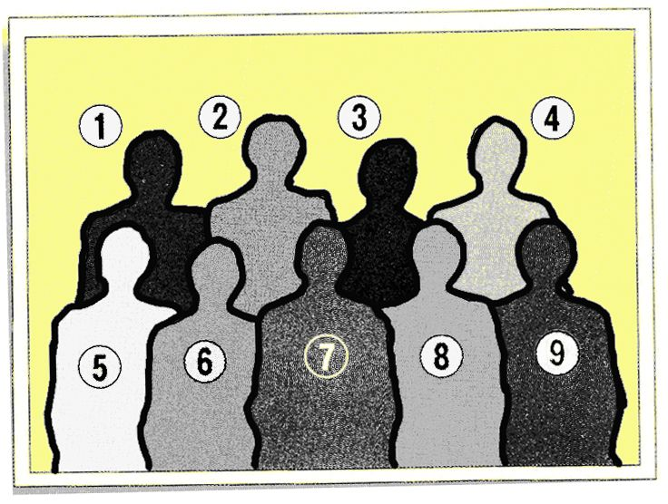

| 「モテる」子どもに育てる七つの引き出し | |
| 富田隆 | |
| SUMIDA出版 (2016) | |
もくじ
ハゲまし、ホメれば、賢く育つ
■ 「できたこと」をいっしょに喜んであげる
■ 「怒って」やらせるより、「ほめて」やらせる
■ 「できた！」という実感を目に見える形に
■ 興味を示すものはなにか、を見つめてあげる
■ 「真似る」ことから始める
■ チャレンジすると、新しい発見がある
■ リラックスした雰囲気が効果的
■ 「半分は新しい」と、やる気になる
■ テレビゲームで学び方を学ぶ
■ 包丁の使い方を教えてみる
手ごたえを感じれば、実行力がつく
■ 「やりとげた」という手ごたえを感じさせる
■ 子どもをマザコンにする二つのタイプ
■ 子どもの「小間使い」にはならない
■ 着替えの準備は自分でさせる
■ ふだんから「キャンプの精神」で楽しむ
■ 子どもの得意分野では、子どもを主役にする
■ 一芸に秀でることが自信につながる
■ 子どもに服を選ぶチャンスを与えてみる
話を聞いてあげれば、表現力が豊かになる
■ 音読をするための〝場〟をつくってあげる
■ 音読すれば、人前で話せる
■ 食卓で話すとき、親は聞き役に回る
■ 子どもを先生役にして、親が教えてもらう
■ ゲームの攻略本で、語彙 が増えていく
■ 感じたことを「１行日記」にする
■ トメるのか、ハネるのか、子どもに教わる
■ 生活のなかで言葉を学んでいく
待つことができれば、優しい子になる
■ 「待つ」という体験が消えてしまっている
■ 「夏休みの計画」を細かく立てる
■ 「いただきます」まで食べない
■ クリスマスなどのイベントをきちんとやる
■ がまんは、あきらめることではない
■ 明るい未来を感じさせる
■ 昔の曲を聴かせる
■ 昔ながらの物語を伝える
■ 寝る時間ではなく、起きる時間を決める
■ 子どもよりも先に、お母さんが起きる
■ きちんとした食習慣を身につける
■ ハグしてあげると効果がある
■ 呼吸法で精神、身体を鍛える
■ 筋肉をリラックスさせる
共感できれば、コミュニケーション力がつく
■ お互いに強化しあうのがコミュニケーション
■ ともに生きていくのがコミュニケーション
■ 笑顔で「おはよう」がポイント
■ 地域ボランティアに気軽に参加する
■ ルールを守ることが、コミュニケーションの第一歩
情報を分かちあえれば、リーダーになれる
■ だれでもリーダーになれるチャンスがある
■ なぜなのか、と説明することが聞く力を伸ばす
■ 分け与えることは、減ることではない
■ できることを伸ばせばリーダーになれる
■ ストレスがいじめを始める理由
■ 自分なりの美意識をもてば、加害者にはならない
■ 「粋」だったら、いじめをしない
■ 親の「なんとなく」が、子どものストレスになる
■ 子どもがいじめられたら
夢を引き出してあげれば、「デキる」子になる
■ 子どもの夢と学校の勉強を結びつけてあげる
■ コロコロ変わる子どもの夢を理解してあげる
■ 憧れのヒーロー、ヒロインから学ぶことは大きい
■ ゲームの攻略本を読むと、国語力が上がる
■ はっきりした手ごたえが自信になる
■ ごほうびにつられて、勉強も好きになる
■ つまずいたら、一つ下の学年の問題集をやらせる
■ ときには失敗したほうが、粘り強くなる
■ 成功体験を味わわせる
■ 賢いネコでも、あぐらをかくことはできない
■ 適した課題が、子どもの能力を引き出す
■ つまずきが結果的にプラスに転じることも
■ 水や肥料の与え方で、花の個性が決まる
あなたのお子さんを、魅力にあふれた「モテる」子に育てたいと思いませんか。もし、それを望むなら、それは決して不可能なことではありません。
「モテる」子に育てたいなら、まず、子どもに、「知」を与えましょう。
知ることで行動の自発性が高まり、考えることが大好きになります。
考えることが好きな子は好奇心にあふれた子になります。
いろいろなことに興味をもち知的好奇心にあふれた子どもは、周囲を明るくし、とても上手にコミュニケーションをとることができます。
「知」は、「モテる」子の第一ステップです。
さらに、「モテる」子には、「徳」を積ませることも必要です。
キレることなく感情のコントロールができる子は、みんなに安心感を与えます。
そんな子は、ほかの子のいうことにも優しくうなずいて共感することができます。
共感力のある子は、周囲から信頼され、しっかりとした社会性を備えた人に成長します。
「徳」をも積んだ子どもは人望があり、必ず「モテる」子になるはずです。
そして、完 璧 な「モテる」子へと進化させるのが、「体育」です。
「体」を育てることは、同時に「心」を育てることにもつながります。
健康な身心は「実行力」の源泉であり、生活能力を高めるのも「体力」です。
実力に裏づけられた自信、すなわち、「自己効力感」にあふれた子どもへと育てましょう。
「体力」をも身につけた子どもは、魅力あふれた「モテる」子です。
もちろん、最初からなにもかも備わった子どもがいるはずもありません。しかし、子どもの心を理解し、子どもを心の底から愛していれば、必ず道は開けるはずです。それに、あなたは一人ではありません。
さあ、ごいっしょに「モテる」子どもを育てましょう。
プロローグ
「モテる」子を育てる。
これは、親になったら、だれもが望むことだと思います。しかし、ただたんに、子どもを甘やかして育てるだけでは、それはかなわないことです。
わたしは、「モテる」子を考えたときに、「野生」と「家畜」という言葉を思い浮かべました。「家畜」というと、誤解を招くかもしれません。「家畜」という言葉でイメージしにくいようでしたら、動物園で飼育されている動物を考えてくださってもけっこうです。
「野生」の動物と「家畜」では、どちらが、美しく見えますか？
どちらが格好よく感じますか？
わたしは、圧倒的に「野生」の動物のほうが、美しく見えますし、格好よく感じます。「野生」の動物は、たいていがシェイプアップした体 躯 をもち、森の木々に隠れて天敵から身を守り、また、自然を利用して獲物を狙います。そんなところに、わたしは「家畜」とは違った「野生」動物の魅力を感じてしまうのです。
「モテる」子は、「野生」味にあふれた子。わたしは、そう思います。
しかしながら、一般的に使われているような「野生」という意味とは、わたしがいう「野生」は、少々違います。わたしがいう「野生」とは、システムに依存しすぎない、という意味です。ちょっと、難しくなってしまうかもしれませんが、それをこれからお話しさせていただきます。
ケータイ電話を手放せない人々
まず、人間というのは、どのようにして育つのかを考えてみたいと思います。
「アベロンの野生児」の話をご存知だと思います。１７９７年に、11 ～12 歳と推定された野生児が南フランスで発見されました。医師だったジャン・イタールは、この野生児をヴィクトールと名づけ、わたしたちと同じような人間社会に適応できるような、人間として育てようとしました。
しかし、それは困難を極める作業でした。６年間にわたって教育をほどこしましたが、普通の人間に育てあげることはできなかったのです。人間が本当の意味で人間に育つためには、やはり家族や社会といった、人間に囲まれた環境が必要だったわけです。
人間というのは文明のなかで、人間に育てられていくのです。人によって育てられることで、はじめて人間になれるということがわかったわけです。
人間。
人間は、動物としての部分と、それにプラスして人間としての部分があるわけです。動物レベルでのたくましさに上乗せする形で、社会性や価値志向性といった人間としてのたくましさをもっているはずです。
わたしたちは、人間自身がつくり出した社会のなかで、生活しています。いい換えれば、社会全体が、人間にとっては「自然」だと考えることができます。そのなかで、「野生」味をもつ人間とは、どういう人間をさすのでしょうか。
それは、社会性も価値観もしっかりもって、考えながら行動する人間です。
そのような人は、しっかりと自発性をもっている人です。
しかしながら、「野生」味を失い、「家畜」化している人々が増えているのが現状です。
これは、じつは、大きな問題なのです。
家畜化している実態とは、システムに依存しすぎているということです。
ここでシステムというのは、わたしたちの快適な都市生活をささえている便利なシステムのすべてだと考えていただいてけっこうです。ただ誤解してほしくないのは、システムが悪い、といっているのではありません。
システムに「依存しすぎていること」が問題なのです。
あらゆる社会に、管理や保護は必要です。しかし、それらが過 剰 になりすぎると、人間の「野生」味、個人の自発性や個性を発揮するチャンスを奪ってしまいます。ある意味での、去勢です。
とくに社会システムの情報化は、人間に特有な考える能力やコミュニケーション能力の低下を引き起こしつつあります。
卑近な例をいうならば、ケータイ電話を考えればいいと思います。
ケータイは、とても便利です。しかし、いつでもどこでも相手と連絡がとれる便利さから、ついつい約束の時間に遅れることが当たり前になったり、無計画な行きあたりばったりのおっつけ仕事がまかり通るとすれば、これは知的な能力の衰退といえるのではないでしょうか。
駅の階段にペッタリと座りこみ、ケータイ片手に大声でしゃべっている高校生の言葉の貧しさには、正直、恐怖心さえ感じます。
これこそが、システム依存の典型だと思います。
現代の情報化されたインテリジェントな社会が求めているのは、知力や道徳性の衰えた野蛮人ではありません。
たくましく、賢く、なおかつ人に対して優しい、文明人を求めているのです。
そして、この点が誤解されがちなのですが、人間にとっての本来の「野生」とは知的で優しく、コミュニケーション能力にあふれた「社会的動物」としての側面なのです。システムの奴隷になるのではなくて、システムを活用して生きていける人。社会の被害者のように振舞うのではなくて、社会をよりよく変えていける、そういう存在こそ、「野生」味にあふれた健康な「社会的動物」といえるのです。
つつましやかないい方をすれば、社会の一隅を照らせるような人、そんな人が、今、求められています。
「野生味を失わない文明人」
そういう人間が「モテる」のです。
考える、という行為
過保護で便利な社会環境が子どもたちから、自発性を奪っている可能性があります。いい方を変えれば、考えるという行為をしなくなってきている、というわけです。
たしかに、そう思わざるを得ないところもあります。
小学生の算数の問題を考えてみましょう。
算数は本来、考える力を養うものだったはずです。ところが今は、たんに解き方を覚えて、それを機械的に繰り返すことばかりが、求められています。
ある公式を使って解ける応用問題が出題されたとします。子どもたちは、問題文を読んで「これは、この公式を使って解けばいいんだ」と判断して、公式に当てはめて解いていくでしょう。しかし、同じプロセスで解くといっても、そこには二つのケースがあります。
一つは、自分の頭で散々苦労して考えて、「だから、公式はこういう形になっているんだ」と公式をきちんと理解し、納得して解いていくケース。
もう一つは、悩んだり考えたりする経験がなく、最初から「模範解答はこうなっている。これを覚えて、それに合わせてやればいいんだ」という形で、条件反射のように自動的に解いていくケースです。
公式を使って解くというパフォーマンスそのものは同じでも、後者は自発的に自分の知恵を絞って考えるということをしていないわけです。
こうした傾向は、社会全体に蔓 延 しています。
つまり、かつては人間がやっていた面倒くさい部分を、賢いシステムが代わりにやってくれるのです。だから、当然考える力が衰えていきます。
コンピュータというのは、人間の思考をなぞるような道具です。今まで人間がやっていた、考えるという面倒くさいプロセスを代わりにやってくれるわけです。ちょうど車が歩く力を代行してくれるのと同じように、考える力を代行してくれるわけです。
なにからなにまでそれに頼っていれば、当然考えない人間になってしまいます。それは、コンピュータに直接触わるか触わらないかという問題ではありません。あらゆるものがコンピュータによって管理されている環境では、もっとも面倒くさい部分をわたしたちの代わりにシステムがやってくれるので、なにも考える必要はなく、ただ条件反射的に反応していればいいのです。
たとえば、考えるということのなかには、自分が知っているいろんな知識をいくつか組み立てて問題を解決していくということがあります。これは日常生活のなかで、すでに失われつつあります。
銀行のＡＴＭを使って送金する場合を考えてみましょう。一つ一つの面倒くさいプロセスを全部システムの側が準備してくれて、画面に触れるたびに、次にやるべきことが自動的に表示されていきます。わたしたちは、それに従って操作すればいいだけです。システムの指示に受身的に応答していくだけで、一連の仕事ができ上がります。
システムに依存しすぎている状況は、いわゆる情報システムばかりではありません。繰り返しますが、わたしは、この社会のシステムが、悪いといっているわけではありません。それどころか、人間が長年かけて築き上げてきたこのシステムに、敬意の念さえも抱いているのです。
ただ、現実にはこの素晴らしいシステムを活用している人は少なく、多くの人々はあまりにもシステムに依存しすぎています。
薬物であれシステムであれ、依存している者に自由はありません。この状況に危 惧 を抱いているのです。
そして、そんな社会のなかで、一人でも多くの子どもたちに「たくましく」「自由に」育ってほしい。
そんな願いから、本書は生まれたものです。
はじめに、「モテる」子は「野生」味にあふれた子。そう申し上げました。
「モテる」子は、システムにあまり依存しない子です。自分で考え、行動する子です。システムに依存してしまうのではなく、システムを主体的に使いこなせるような力をもった子です。
「モテる」子には、生活するパワーがみなぎっています。知恵をもち、人間としての社会性にあふれ、価値観をしっかりともった子です。
それは、木々に身を隠して天敵から逃れ、自然を利用して食料を見つける「野生」の動物に、どこか似ているように思います。
●引き出し１●
ハゲまし、ホメれば、賢く育つ
深層心理テスト～あなた自身にとって重要な「あること」がわかる心理テストです。
質問
夢のなかのお話です。あなたは、険しい山を登っているところです。汗を流し、足腰もかなり疲れていますが、頂上はまだまだ先のほうです。
「なんでこんな苦労をしているんだろう？」
と疑問に思ったその時、山頂の方角から、あなたの名前を呼ぶ声が聞こえてきました。どこかで聞いたことのある声です。さて、上のほうからあなたを呼んでいるのは、いったいだれでしょう？
あなたの心にひらめいたその人物を答えてください。
診断
あなたにとっての「お手本（モデル）」がわかります。
その人こそ、あなたが「尊敬」し「お手本」にしている人物です。
山道を登るということは、人生の難行苦行を表わすと同時に、「向上心」の象徴でもあります。問題のような夢のなかであなたがくじけそうになった時、声をかけて導いてくれる人とは、あなたが無意識に尊敬し「お手本」にしている人物なのです。
子どもの成長にとって、「お手本」が大切なのは、いうまでもないことですが、それは、すでに成人し親になったわたしたちについても同じこと。
たまには、自分自身の心の内を振り返ってみましょう。あなた自身のこれからの生き方が、お子さんに影響を与えることは間違いないのですから。
「できたこと」をいっしょに喜んであげる
「この子は、だんだん好奇心が出てきたな」
そのように感じるのはどんなときでしょうか。それは、なにかに興味をもって、子どもが自分から、親に近寄ってきたときだと思います。最初にまず、子どもの側からの働きかけがあって、はじめて自発性が育っていくのです。
たとえば、子どもが国語の問題を解いていて、ずっとわからないで悩んでいるケースを考えてみましょう。そんなとき、お母さんは「これはこうやって解くのよ」と、つい手を出して答えを教えてあげたくなるかもしれません。そうすれば、子どもはそのときは「ああそうか」とわかります。
しかし、ちょっと立ち止まってみてください。本当に大切なのは、子どもが自分でいろんなことをやってみた結果、「あ、これだ！」と答えを見つけることです。
「もう一回、文章を読んで考えてみたら」
「質問の意味を考えてみるといいかも」
と、子ども自信が考えることを、どんどん奨励するといいかもしれません。
子どもがまず先にいて、子どもが勝手に課題に取り組む。そして、子どもが自分であれこれ考え、自分なりの答えを見つけたとき、親は、子どもを励まして、ほめて、いっしょに喜んであげることです。
子どもから近寄ってきたり、仕掛けてきたりした結果、なんらかの手ごたえがなければ、仕掛けることそのものをしなくなってしまうからです。
取り組む課題自体は、お母さんが与えてあげてもいいでしょう。たとえば、
「このパズル、おもしろそうね。やってみれば......」
そういって、パズルを与えると、子どもはそれをどうやって解けばいいかを自分で考えます。そして、体験によって解き方を習得していきます。
また、自発性を育てるのは、毎日の生活習慣のなかでも十分にできるはずです。
朝起きるときから考えてみるとわかりやすいでしょう。子どもの苦手なことの一つは、一人で起きることです。だから、お母さんがしばしば手を貸してしまいます。
しかし、自分で目覚ましをかけて起きることができるようにしたら、どうでしょう。もっといえば、毎日決まった時間に起きていると、目覚ましが鳴る前に起きて、目覚ましを止められるようになるはずです。これは、無理矢理起こされるのではなく、自分から起きるということをやっているわけです。
「そんなことをいっても、学校に行かなければいけないから起こさないと......」
そこはもう少し落ち着いて考えてみましょう。なにがなんでも親が介入して無理矢理起こされている子ども。起きるという行為で自分が主人公になって、自分の力でやりとげる子ども。どちらが生活するパワーがあるでしょうか。
道具の力を借りようがどうしようが、自分で起きられる子どものほうがいいわけです。
まず、自分で起きる習慣を身につけさせること。そうすれば、だんだんと自発性が出てくるのです。
大切なのは、自発的にいろんなものを探すような野生動物と同じ、自発的な行動なのです。放っておいても動き回り、放っておいてもいろんなことをやっていく生き物。そんなふうに自分の子どもを見ることです。
「怒って」やらせるより、「ほめて」やらせる
それでは、子どもから働きかけた行動が、どのようにして自分のものになっていくのでしょうか。
「励ます」「ほめる」という言葉を使いましたが、人間を含めてすべての生き物は、より楽しいことを求める「快楽志向」をもっています。
そのことを証明するものとして、スキナーボックスを使った実験が有名です。
まず、レバーを押すと、エサが出てくる仕組みになっている箱のなかに、ネズミを入れます。ネズミは、最初のうちはどうやればエサをもらえるのかがわかりません。ところが、なにかの弾みでレバーに触れたところ、エサが出てきました。それを繰り返しているうちに、レバーを押すとエサが出てくることに気がつきます。すると、ネズミは自発的にレバーを押してエサを得るようになるのです。
この実験でわかることは、ある行動をやってみて、よい結果に結びつけば、その行動が自発的に繰り返されるということです。じつに簡単な仕組みになっているのです。これを心理学では「オペラント条件づけ」と呼びます。
そして、オペラント条件づけによって行動が繰り返されるようになることを「強化」といいます。
ただし、よい結果には二通りあります。
一つは、文字どおりのよい結果です。動物なら「エサが手に入った」といった快楽がそれにあたります。人間の場合には、成長とともにバリエーションがどんどん増えていきます。生理的な快楽だけでなくて、子どもの段階でも、ほめられるとうれしいということがあるわけです。これを「正の強化」といいます。
もう一つは、苦痛を受けなくてすむ、嫌な目にあわずにすむというものです。これもよい結果なのです。
たとえば、「今度のテストで25 点以下だったら、テレビは禁止するよ」と、親が脅 したとします。すると、子どもはテレビを見たいから、必死で勉強するでしょう。これは、なにかができるようになったからうれしい、テストでいい点がとれてうれしい、というのとは違います。つまり、「脅 しの原理」によって、嫌なものから逃れるための行動なのです。これを「負の強化」といいます。
子どもになにかをさせるとき、負の強化のほうが手っ取り早いと感じられるかもしれません。しかし、そこには大きな落とし穴があります。目の前に脅 威 があるときは行動しますが、その脅威がなくなったら自発的に行動しなくなってしまうのです。
「テレビなんて、別にいいや」と思うようになったら、いくら脅しても勉強しなくなるということです。
自分からチャレンジしてみたところ、よい結果が伴うこと。新しい行動を習得するかどうかは、このポイントにかかっています。よい結果が手ごたえになって、自発的にその行動を起こすようになっていくのです。
「できた！」という実感を目に見える形に
陰山英男氏の『百ます計算』が流行したのをご存知でしょう。
あれに子どもたちが夢中になるのは、まるでゲームのように自分の成績が「量」として把握できるからです。あるときは時間で、あるときは正答率で、あるときは何題解けたかといった具合です。「うまくいった」「できるようになった」と、自分が進歩した実感がそこにはあるのです。
これは、先ほど触れた、手ごたえであり、よい結果です。
ですから、子どもは「もう一度やってみよう」と、さらなるチャレンジを自分からやろうという気が起きるのです。自発性を高める、とても効果的な方法です。
ネズミの場合、エサが出てくる、水が与えられるといったことがよい結果になります。ところが人間の場合、よい結果というのは単純ではなく、いくつものパターンがあります。本当に自分でできたということだけでも、ものすごい喜びになります。自分が努力して蓄積しているものが、これだけ量が増えたという数字の変化でも本当に手ごたえになるのです。このあたりが、人間がほかの動物よりも、優れている点です。
逆に、できないという状態が続いていると、やる気がなくなってしまいます。これは、心理学では「消去の事態」と呼んでいます。つまり、「のれんに腕押し」「糠 に釘」、努力がまったく報われない状態です。これがずっと続くと嫌になってしまいます。
ただし、手ごたえがなく、「もういやだ、やめよう」と思っていたものの、少し休んでからまたやると、元気がわいてきて、もう少しがんばろうという気になることがあります。これは「自発的回復」と呼ばれるものですが、そこでなんらかの手ごたえを感じられないと、やはり嫌になってしまいます。
自発性の原動力になるのは、つねに「できた」という手ごたえです。あるいはなんらかのよい結果なのです。
興味を示すものはなにか、を見つめてあげる
子どもたちは知的な能力を身につけなければなりません。だれもがこのことを当然のようにわかっているはずです。
その際、気をつけなければならないことがあります。それは、わたしたち、教育する側がどういうモデルをもっているかということです。
とても単純なモデルを考えてみましょう。
子どもがまだなにも知らない空っぽの状態だとします。そこに効率よく質の高い「知」を教えていくためには、「知」の中身をたんにつめ込んでいけば完成するという考え方です。これは中身が空っぽのバケツに砂を入れていくのと同じようなモデルです。
効率よくバケツにものを入れる方法。つまり、「知」をどうやって入れればいいのか、どういう順番で入れればいいのかといったマニュアルは、もう嫌というほど世の中に出回っています。
たとえば、小学１年生ではこれだけの学習内容を習得しましょう、という達成目標があります。こういう教え方をするといいよ、という先生用のアンチョコもあります。さらに、お母さんたちも解説書で勉強しているかもしれません。
しかし、バケツに砂を入れていくだけのモデルで根本的に抜け落ちてしまうのは、自発性を育てるというもっとも大切な部分です。まるで、ガチョウの肝臓を肥大化させてフォアグラにするときのように、無理矢理口を開けさせて、ギュウギュウと食べ物をつめ込んでいくだけになってしまいます。子どもたちはひたすらそれを受け入れていくことになるのです。
バケツは砂がいっぱいになったら、もうそれ以上は入りません。これをやめないと、知的好奇心も自発性も育ちようがありません。子どもを受身にさせるのではなく、大切なのは、あくまで知的な自発性を育むことなのです。
ある家庭では、月曜には学習塾、火曜はピアノ、水曜は習字、木曜は英会話......と、土曜日まで子どもを毎日習いごとに通わせていたそうです。もちろんお金がかかりますから、お母さんはパートで働いていました。そして、「わたしは子どものために一生懸命にやっているんだ」と思い込んでいたのです。何年か経って、いったいどうなったでしょうか。結局、子どもはなに一つ身についていなかったそうです。たった一つ身についたのは、唯一ひまな時間を見つけてやっていたゲームだったのです。
そうなってしまった理由はあきらかです。子どもにとって、ゲームだけが唯一、自発的にやっていたものだからです。勉強でも習いごとでも、「やれ」といわれてやらされているだけのものは、自分にとって意味のあるものとは思えません。なにをやるにしても、自分がやりたいという気持ち、自分が納得するというものがないと、身につかないのです。
「ペットとして自分の子どもを見てはいけない」
よく、そういう人がいます。たしかにその通りですが、フォアグラモデルのようにつめ込んでいくくらいなら、ペットとして子どもを見たほうがずっとましです。
そう簡単には言葉が通じない生き物。通じたとしても命令通りには動かない生き物。勝手に自分のやりたいことをやってしまうような生き物。気まぐれなネコでも、わがままな犬でもかまいません。
そのようなペットくらいに考えておいて、子どもが興味を示すのはどういうことなのか、そう思って見つめてあげていればいいのです。そうすれば、やっていいことといけないことの区別も、子ども自身でだんだんとつけていくはずです。
「真似る」ことから始める
人間の行動は、動物と違って非常に微妙で複雑です。たとえばパソコンのキーボードを指先で叩くような行動が今は必要になっています。
しかし、もとを正せば、どっちに行けば湖にたどり着いて水が飲めるのか、どの木の実は食べられて、どの実は食べられないのか......。人間の行動も、そういう生活に結びついたところからスタートしているわけです。
どんなに文明が進んでも、基本は同じです。
現代に置き換えれば、社会により適応して生きていくために、正確な判断ができることが求められます。必要な情報に接して、それを自分のなかに取り入れて、問題解決の手法をいろいろ自分で身につけること。そして、状況に応じて問題解決をいろいろやり分けていくということです。
それを考えると、やはりフォアグラモデルでは失敗するのはあきらかです。食べさせられているほうは、なにを食べているのかすらわからないからです。苦しいだけで、喜びもなにもありません。
「そうはいっても、うちの子はなかなかやりたがらない......」
そんな方もいるでしょう。そこで、自発性を促すための具体的なテクニックがあります。
先ほどのスキナーボックスではネズミを例にしましたが、知能のレベルを上げてサルを取り上げてみましょう。サルのおもしろいところは、人間がやっている行動を見て、自分も真似をして同じことを始める点です。これを「観察学習」といいます。
当然、サルの仲間である人間は観察学習の力がとてもすぐれているのです。
人間はモデルのやることを真似したがる生き物。つまり「真似っこ動物」なのです。
じつは、子どもたちも、人がやっているのを見て、おもしろそうだと思うと自分でもやってみるようになります。ということは、いいモデル、いいお手本がいると、子どもは自発的にいろんなことをやるようになります。
スポーツの例がわかりやすいかもしれません。たとえば、ゴルフスクールに入ったときのことを考えてみましょう。
「はい、コーチのやるのをよく見ていてください」
と、まずはお手本を見ることから始まります。「テイクバックはこうするんですよ」と、最初はコーチがやってみせてくれるでしょう。それを見てから、自分でもやってみます。はじめはうまく打てずに変な格好をしているのですが、コーチの真似をしているうちにだんだんさまになっていきます。
すると、コーチに「いい感じですね」とほめられたりします。おとなでもほめられるとうれしいですから、強化されるわけです。
「あ、そうかそうか。なるほどね」
と自分で納得すると、スイングがだんだん身について上達していきます。
子どもも同じことです。よいお手本、よいモデルで誘惑するのはとても効果があります。
それでは、子どもが真似したがるモデルとは、どんな人でしょうか。
これまでの調査でわかっているのは、同性のちょっと年上くらいのモデルが理想的とされています。たとえば、７歳の小学１年生の男の子ならば、小学３年生くらいのお兄さん。女の子ならばお姉さんです。お兄さん、お姉さんがやるのを真似して、自分もくっついていってやるようになります。
昔は学年を越えた子どもたちの集団がありました。小さな子どもから大きな子どもまでみんなでいっしょに遊んでいたのです。そのなかにはリーダー格のガキ大将もいました。小さな子どもは大きな子どもの真似をして、自然といろんなことを学んでいたわけです。
同じような子どもたちの集団は、今でもできるはずです。しかし、現実的には今の教育システムは学年による横の輪切り状態になってしまっています。その結果、身近なモデルがなかなかいないという現状になっているのです。
しかも、今は少子化、核家族化の時代です。ですから、もし、子どもの身近にいいモデルがいなければ、親自身がモデルになる必要があるでしょう。
子どもが読書に親しんでほしいといっても、親が１冊も本を読まない家庭で、どうやって子どもが本を読むようになるでしょうか。なによりも、親やまわりの家族が知的好奇心を示すことが大切だと思います。
それぞれの親の趣味でかまわないと思います。
なにか読んでいる、なにか調べている、という姿を親自身が見せていれば、子どもは自然と読書に親しむようになるのです。
「この本はおもしろいんだよ」
そうやって子どもをうまく誘惑するのもいいでしょう。強制的にやらせるのではなく、子どもが自分の力で自発的になにかをする方向にもっていくことです。
あるいは、子どもにとっては、親ではなくて、テレビのなかにいるアニメのキャラクターがモデルになるかもしれません。
モデルがいれば、今までやったことがない新しいことを「おもしろいかもしれないから、やってみよう」という気が起きてきます。そういう仕掛けがあるのですから、モデルの効果を利用しない手はありません。
そうはいっても、子どもは放っておいたら勉強しません。小学１年生だったらここまでやりましょうという取り決めがあるのですから、ある程度、強制する部分も必要になってきます。そのときでも、子どもが自分からやってみようという気になるように、環境をうまく整えてあげることが大切だと思います。おもしろそうなもので上手に誘惑して、新たなことにチャレンジさせることです。
チャレンジすると、新しい発見がある
それでは、なぜ、わたしたちはこれまでやったことのない新しいことにチャレンジするのでしょうか。
食わず嫌いを考えると、一番わかりやすいと思います。ニンジンが嫌い、ピーマンが嫌いなど、だれでも子どものころから食わず嫌いをもっています。ところが、おとなになるにつれてずいぶんそれが減っていきます。
食わず嫌いを克服した過程を振り返ってみると、だれかおいしそうに食べていた人が身近にいたはずです。
たとえば、コリアンダーを食べられない人がいるとします。でも、身近に、
「わたし、コリアンダーが大好きなの」
といって、おいしそうに食べている人がいると、半信半疑でも自分でひとくち食べてみるでしょう。
「うーん......、やっぱりちょっと臭いわね」
なんて最初は顔をしかめていますが、そのうち「たしかに、これはこれでいいわね」ということになってくることがあります。もちろん、食べ物の場合は人によって合う合わないがあります。しかし、だまされたつもりになって食べてみた経験が一度や二度はあるはずです。
そこには、コリアンダーが好きな人というモデルがいます。食べるということを通じて新たな発見もあります。食べたことのないものを食べる喜びというのも素朴にあるでしょう。つまり、敢えてチャレンジして食べてみたら、よい結果が生じたのです。そんなことを通して、だんだん好き嫌いの「嫌いな部分」が減っていって、「好きな部分」が増えていきます。
子どもたちも同じことです。
たとえば、「山登りに行かない!? 」と子どもを誘うと、きっと「いやだあ」というと思います。でも、「お母さんが（あるいは、お父さんが）、ちょっと行きたいんだよね。お願いだから、つきあってよ」などといって、とりあえず、子どもと一緒に山登りをしたとします。
途中、木々の話をしたり、珍しい鳥にであったり、親子でいろんな話をします。
「あなた、すごいね。ぜんぜん疲れないの。お母さんビックリ」などとおだてたりもします。そうして、山頂でおいしいおそばでも食べると、子どもには、よい結果が残るかもしれません。よい結果が残った子どもは、きっと山登りが好きになるのです。
今までやったことがないことにチャレンジして、新しい発見、よい結果を得られれば、さらにチャレンジしようという気になります。
リラックスした雰囲気が効果的
チャレンジするといっても、はじめてやることはだれもが苦手です。おとなでも苦手です。そこで、はじめてのことをやるときには、「チャレンジしてみよう」と思わせる雰囲気づくりが大切になります。
ここでも食わず嫌いを例に考えてみましょう。食わず嫌いだった食べ物を口にするようになったのはどんな場面かを振り返ってみると、お酒の席だったというケースが多いのではないでしょうか。そこには、モデルとなる人がいるだけでなく、お酒の力もあるのです。
お酒を飲むとリラックスして、普段ならやらないようなことまでやってしまうくらい大胆になるからです。嫌いな食べ物を思いきって食べてみたところ、「なんだ、食べられるな」といったことになることがあります。
もちろん、子どもにお酒を飲ませてはいけませんが、要するに、リラックスした環境のほうが、新しいことをチャレンジするにはいいということなのです。あまりピンピン張りつめた雰囲気では、新しいことをなかなかやろうとはしません。
ですから、スパルタ教師が間違えるのはそこです。子どもをひたすら緊張させておけばいいと考えてしまうのです。しかし、そういう状況では、子どもはいわれたことはやりますが、創意工夫はしません。これは、先ほどのフォアグラモデルと同じです。怖いので、つめ込まれたことはグッと飲み込みますが、自分からやるようにはならないのです。
それでは、どのような教え方がもっとも自主性を育むのでしょうか。
次のような実験があります。「民主的リーダーシップ」「専制的リーダーシップ」「放任的リーダーシップ」の３つのタイプのリーダーをそれぞれ先生が演じて、子どもたちにしばらく作業させてみるものです。
民主的リーダーは、指導はしますが、強制はしません。
専制的リーダーは、恐怖で押さえつけ、強制的にやらせます。
放任的リーダーは、ほったらかしです。
そして、一定時間作業させたあと、いっせいに先生がいなくなります。すると、子どもたちはどうなるかという実験です。
先生が突然消えたあとでも、一番がんばるのは、民主的リーダーシップのもとでやっていたグループです。指導はするけれど強制はせず、なるべくみんなが参加して作業させる。そういうやり方のグループは、リーダーがいなくなっても子どもたちだけでやり続けるのです。
専制的なリーダーのグループはどうなるでしょうか。規律正しくやるのはいいのですが、先生がいなくなると、もうだれもやろうとしません。恐怖で押さえつけられていると、その恐怖がなくなってしまったらなにもやらなくなってしまうのです。
それに、放任的リーダーのもと、最初からやりたい放題させていると、先生がいなくなってもずっとめちゃくちゃのままです。
ここでわかることは、子どもたちが食わず嫌いをやめるためには、気軽にものがいえたり、失敗を恐れずにいろんなことが試せるような「気楽な」雰囲気のほうがいいということです。つまり、リラックスした雰囲気づくりが大切なのです。
「半分は新しい」と、やる気になる
子どもたちにとっては、すでにおもしろいもの、好きなものがたくさんあるはずです。新しいことにチャレンジするといっても、これまでやってきたものとの違いが大きすぎると、やはり敬遠してしまいます。
今の子どもはこれまでの食習慣にもとづいて、すでにいろんなものを食べてきています。自分がどんな食べ物が好きかもわかっています。そうすると、新しいものを食べるときは、いきなりこれまでの食習慣から大きくかけ離れたものではなく、これまで食べてきたものの周辺から入っていくのが当然でしょう。
かといって、これまでと同じようなものばかりだと飽きてしまいます。この飽きるというのがあるから人間は進歩するのです。
ですから、あまりにも簡単な問題ばかりをやっていると、子どもは飽きてしまいます。新しさがまったくないので、「えっ、またかよ」と子どもは思ってしまうのです。
「もっと難しいものにチャレンジしたい」「もっと手ごたえのあることをやりたい」と思うのは、その子の精神が健康である証拠です。
そこで、新しいものにチャレンジさせるのですが、これが意外と難しいのです。丸っきり新しいものでは、敬遠されてしまうこともあるからです。
それでは、どういうものだと子どもはその気になるのでしょうか。
よく「半々」といいます。半分はすでにやったことと似た要素。残りの半分は新しい要素。この二つが半々に入っていると、子どもは「やってみようかな」という気になります。
これは、オモチャでも同じです。幼稚園の子どもたちがどういうオモチャを好んで選ぶかを調査すると、ふだん遊んでいるオモチャと比べて、新奇性、つまり新しい部分、見たこともない部分が５割くらいあると奪いあいになります。そういったオモチャはみんなが触ってみたくて仕方がないのです。
新しいことにチャレンジするときは、あまりあせらず、少しずつ、というのがポイントです。上手に子どもを誘惑して、やらせてみて、うまくできたらほめることです。
うまくできなくても、本人が一生懸命にチャレンジしているならば、放っておきましょう。うまくできず、子どもが嫌になってやめようとしているのなら、ちょっとヒントを出してあげましょう。そして、励ましてあげることです。
テレビゲームで学び方を学ぶ
子どもの遊びのなかには、どんなものでも必ず自発的に学ぶ要素があると思います。今、悪役としてあげつらわれることが多いテレビゲームのなかにも、そういう要素があるでしょう。
もちろん、テレビゲームを野放しにやらせるのは考えものです。目によくないだけでなく、脳にも一部影響があるからです。現在のゲーム批判はいい過ぎている部分、勇み足の部分があると思いますが、すべてを否定できることではないと思います。
というのは、同じことを繰り返しやることによって、人間の神経の状態、脳の状態は変わるからです。
オリンピック選手がなぜ、あんなにすごいことができるかを考えてみるとわかりやすいでしょう。オリンピック選手は日々の厳しい練習を通じて、筋肉を鍛えています。しかし、それだけではありません。身体を十分にコントロールできるような神経系のプログラムが頭のなかにできあがります。つまり、一般の人とは違う頭になってしまうわけです。ということは、何度も何度も反復練習していると、脳は変わるということです。
同じように、テレビゲームを毎日やっていると、そのことによって頭のなかのなにかが変わるのは間違いありません。しかし、変わっていい部分も当然あるわけです。
ゲームをするとき、子どもたちは指先しか動かしていませんが、ゲームのなかで今までにない体験をしています。そして、それまで行ったことのない面にたどり着くために、困難な部分をクリアしているのです。そのためには、いろんなことを工夫しなければなりません。子どもたちは自分なりにそこで学習しているのです。
それは、なんの役に立つのかわからない学習かもしれません。しかし、少なくとも一ついえるのは、ものを学ぶことを学んでいるということです。そのやり方を学んでいる点は認めてあげなければなりません。
ですから、子どもが自発的にゲームをすることを完全に禁止してしまう必要はないと思います。時間をしっかり決めてゲームをすることは悪いことではないと思います。
むしろ、親がきちんとゲームソフトを選ぶことのほうが重要ではないでしょうか。
なかには、あきらかに子どもに悪影響を与えるようなソフトもあります。反射的に操作するだけのソフトのなかには、神経症になってしまいそうなものもあります。非常に残虐性の強いものや、過剰に攻撃的で、しつこく破壊や殺しを繰り返させるものもあります。そういったソフトには気をつけなければなりません。
包丁の使い方を教えてみる
都市のなかにも自然があります。
それこそ路地裏にも花が咲いています。ゲームのような人工的な世界だけではなくて、身のまわりの自然、自分自身の肉体の自然。そういうものとのかかわりのなかで、好奇心を育むという昔ながらの方法も欠かせません。
それでは、どうやって関心をもたせればいいのでしょうか。
それは毎日の生活です。
今の子どもたちは、管理されすぎてしまっている動物園の動物のような状態です。待っていればエサが出てくるような環境にいるからです。そうではない状況というのをかつてはみんながもっていたと思います。それがみずからが生活をするということです。
たとえば、親が夕飯をつくっていれば、子どもたちは自然に寄ってきます。とくに、お腹がすいた時間になれば、子どもは「なにをつくっているの？」と、自分から近づいてくるでしょう。そして、自分たちがふだん食べているものの料理される前の姿をしげしげと眺めるはずです。それが好奇心をふくらませるきっかけになるのです。
そんなときには、ちょっと包丁の使い方を教えてあげるといいかもしれません。
「ねえ、ちょっとキャベツを切ってみない」
といって、包丁の使い方を教えます。
「包丁を使うときは、切るものの上に指を曲げて押さえるの。そして、曲げた指に包丁を添えるのよ」
といって、実際に、やり方を見せながらキャベツを切らせてみるといいのではないでしょうか。
そして「包丁の使い方、上手じゃない」とほめることを忘れないようにします。そうすると、その子どもは、料理に興味をもつかもしれません。
掃除にしても同じです。家族が共同生活をして、その生活をみんなで一緒になんとかマネジメントしていく。そこに子どもをいかに巻き込めるかというのは、間接的に好奇心を育てることにつながります。そのなかで、子どもはいろんなことを学んでいくでしょう。
ぞうきんがけ一つをとっても、実際に体でやってみないとわからないことがあります。たとえば、汚れたぞうきんをすすぐ回数を減らすにはどうしたらいいか。ぞうきんを折りたたんで使い、汚れたら折り返すといった工夫を自分でするようになります。
このような日常生活を抜きにしてしまうと、知識のありがたさ、大切さを子どもは感じることができなくなってしまいます。生きている現場から浮き上がったような知識ばかりでは、子どもたちにとってはますますどうでもいいようなものに見えてしまいます。
当然のことですが、子どもはまだ一人前とはいえません。でも、自分から学ぶことの意味を自覚してもらうためには、同じ生活者として、同じ仲間として接していくことが必要なのではないでしょうか。そうしないと、子どもの知的な好奇心を育もうとしていろいろ誘惑してみたところで、底の浅いものになってしまいます。
生活のベースの部分で、子どもがお客さまになってはいませんか!?
そうではなくて、子どもが主体となった生活をさせることです。そうすれば、生活のなかでさまざまなことを自分で発見し、自然といろんなことに興味をもつようになるのです。
そして、子どもが自分からなにかにチャレンジしたときは、励ましてあげること。できたときは、ほめてあげること。手ごたえを感じれば、さらに「知」の世界をみずから広げていくことになるのです。
●引き出し２●
手ごたえを感じれば、実行力がつく
「クジラの大きさ」心理テスト
質問
『ピノキオ』のお話を思い出してください。
ゼペットじいさんを探しに海に出かけたピノキオは、クジラに飲み込まれてしまいます。
ところで、このクジラの大きさは次のどれくらいでしょうか？
（１）手漕 ぎボートくらいの大きさ
（２）小型漁船くらいの大きさ
（３）中型の貨物船くらいの大きさ
（４）大型タンカーくらいの大きさ
診断
あなたの「隠れマザコン」度がわかります。
男であれ女であれ、「支配的な母親」の影響を強く受ければマザーコンプレックスになる可能性は大です。
このお話でピノキオを飲み込むクジラは、支配的な母親の象徴です。
イメージしたそれが大きければ大きいほど、深層心理の面で、母親に強く影響されている可能性があります。
（１）ただの親不孝!?
飲み込まれることを拒否しているあなたは、親に対しても拒絶的な可能性が。ちょっと冷たいのでは!?
（２）普通の親子
自立した、適度な距離感のある親子関係です。あまり問題は起きないかもしれません。
（３）ちょっとマザコン
あまり意識していなくても、少しマザコンの傾向があります。なにかと母親を頼りにしてはいませんか!?
（４）立派なマザコン
筋金入りのマザコンです。むしろ、母親の影響をしっかり意識することで、逆に、善用しましょう。
「やりとげた」という手ごたえを感じさせる
どんな親にも「自分の子どもがこんなことをできるようになったらいいな」という夢があります。忘れ物をしないようになるとか、勉強ができるようになるとか、家の手伝いを進んでするようになるとか、理想はたくさんあるものです。でも、実際にそんな子どもに育てるのは簡単なことではありません。
どうやったら、子どもが勉強や家の手伝いをやってくれるようになるのでしょうか。その仕掛けになるのが、心理学でいう「スモールステップスの法則」です。
よく忘れ物をする子どもがいるとしましょう。いくら親が「忘れ物をしないようにしなさい」といっても、あまり効果はありません。その子にとっては、一人で必要なものを全部思い出して、準備するのは大変なことなのです。
そこでまず、明日の準備をいっしょにしてみてはどうでしょうか。
「明日もっていくものを今日のうちに入れておこうね」
「明日は学校でどんな授業があるのかな」
「算数では教科書とノートしか使わないの？」
「音楽の時間はどんな勉強をするのかな」
そうやって細かくチェックしていくうちに、子どもはどんどん必要なものを思い出していきます。それができるようになったら、次は「明日はどんな授業があるのか、なにがいるのか自分で思い出してみようね」と、子どもに考えさせるようにします。やがて、子どもは自分から「明日の体育の時間はハチマキが必要なんだ」とか「給食当番だからエプロンをもっていかなくちゃ」と考えるようになるのです。
最初から大きな目標を達成しようとしても、なかなかうまくいきません。そして失敗ばかりしているうちに、「もうダメだ」「ぼくにはムリだ」というように、やる気までなくなってしまうのです。勉強が苦手な子どもに分厚い問題集を与えても、きっと見ただけでうんざりしてしまうでしょう。
そうならないよう、大きな目標があるときは、まずいくつかの小さなステップに分けましょう。問題集だったら、数ページごとにバラバラにして、一つずつ手渡すのです。数ページの薄い問題集だったら、いくらわからない問題が多くても、がんばればできそうな気がします。
それが解けたら、次の数ページ分を渡してみましょう。
きっと「前のときもできたんだから、今度もきっとできる」と思って、がんばるのではないでしょうか。
一つ一つをクリアすることで、「自分はやればできるんだ」という喜びを感じ、次に進もうというパワーになるのです。
なにかにチャレンジするときは、小さなステップごとに分けて、一つ一つクリアしていくことが「スモールステップスの法則」の基本です。
まずは、「ここまでやってみようね」というように、ほんの少しの努力で成功するように親がステップを示してみてください。その次に、なにか大きな目標があるときは、どうしたらクリアできるのか子どもといっしょに考えてみましょう。仕事でも、すべての工程を細分化して、担当やスケジュールを決めることができれば、それだけで半分実現したようなものです。目標をスモールステップに分けるのは、計画を立てて実行するという能力を養うことにも結びついているのです。
もし、子どもが自分でスモールステップを設定し、成功までのスケジュールを一人でつくれたら、それだけで大きなお手柄なのです。
子どもをマザコンにする二つのタイプ
「正の強化」「スモールステップスの法則」では、お母さんやお父さんの協力が大きなポイントになっていました。でも、いつまでもお母さんが手伝っていると、子どもの実行力は育ちません。少しずつ子どもを独立させることが大切です。そうしないと、自分でしたいことがあったら、いつでもお母さんが手伝ってくれるものだと思うようになってしまいます。これでは完全なマザーコンプレックスです。
マザコンになる原因としてよくいわれるのは、子どもを叱 りつけて、いうことを聞かせているお母さんです。「命令通りに動きなさい」と、なにからなにまで子どもを支配してしまうのです。
「子どもにやらせておいたら、ちゃんとできないから、わたしがいうしかないの」
お母さんはそういうでしょう。子どもがやるよりも、親がやったほうが早いし確実なのは当たり前です。だから一から十まで子どもの行動を命令し、自分の思った通りに動かそうとするのです。これでは、子どもは人間ではなくロボットになってしまいます。でも、今どきこういう支配的なタイプのお母さんはあまり見かけません。
では、どんなタイプのお母さんが、子どもをマザコンにしてしまうのでしょうか。
たとえば、「あなたは勉強しなければならないから」「あなたはお稽 古 ごとがあるから」と、子どもの役割を決めつけてしまって、それ以外のことをすべてやってあげるようなお母さんです。お母さんが子どもの「小間使い」になっているのです。
子どもが、いわれたとおりに勉強やお稽古ごとさえしていれば、お母さんはなにもいいません。すると、どうでしょうか。子どもは勉強やお稽古ごと以外、なにもできない人間になってしまうのです。
「命令タイプ」のお母さんと「小間使いタイプ」のお母さんは、まったく逆のようで、じつはそっくりなのです。どちらも、子どものすることを親がすべて決めて、子ども自身に考えさせるようなチャンスを与えないのです。子どもの自立をはばんでいる点では同じです。もしかしたら、「この子が永遠に自分の子どものままだったら幸せなのに」と心の底で思っているのかもしれません。
そんなお母さんでも、子どもがまったくなにもできないままだったら困るということを、「頭」では理解しているのです。だから、「勉強だけがんばってほしい」「お稽古ごとでは一番になってほしい」と思うのです。
でも、考えてみてください。どんなに天才になっても、一人で生活していく力がなければ、いずれは困ることになるのです。お母さんが永遠に生きて、子どもの面倒をみられればいいのですが、それは不可能でしょう。
そしてマザコンになってしまった子どもは、おとなになっても自立した人間になれず、母親のように面倒見のいい奥さんを求めるしかないのです。
子どもの「小間使い」にはならない
ある有名な会社に就職した新入社員の話をしましょう。
その人は東京大学を優秀な成績で卒業しました。就職試験でも大変優秀な成績で、英語もペラペラというエリートです。毎朝出社してくると、自分の机の前に座って英字新聞を読み始めます。
でも、仕事をしようとはしないのです。
上司が「これをやりなさい」といって命令しても、彼はまったく動こうとしません。その理由を聞いたところ、「この仕事のやり方がわからないので、やろうとしてもできない」というのです。
営業にも行かせてみましたが、彼の営業している商品はまったく売れません。なぜなら、彼はマニュアル通りのことしかしないからです。断られたら素直に帰ってくる、というのでは、商品は売れるはずがありません。それどころか、彼は取引先を怒らせてしまうこともしばしばです。というのも、彼がやはりマニュアルに書いてあることしかいわず、それ以外のことを聞かれても「わかりません」「知りません」としか答えないからです。
つまり彼は、「自分でなにをしたらいいのか考える」「自分で考えて仕事のやり方を工夫する」という能力がまったく育ってなかったのです。それでも、会社としては、せっかく東大卒を採用したのでクビにするわけにもいきません。今では上司が、まるでお母さんのように一から十まで「これをこういうふうにやりなさい」と指示を出して、仕事をさせているのだそうです。
会社にとって困るのは当然ですが、逆に新入社員の彼にしても、とても悲 惨 なことなのです。勉強という特殊能力だけは一人前かもしれませんが、それ以外は赤ちゃんと同じようなものですから。今は、お母さんのように命令してくれる上司がいますからなんとか会社員でいられますが、これではとても一人で生きていくことなどできません。
そういう人が階段を上り損ねたときはどうなるのでしょうか。
「こんなに優秀なぼくがどうしてこんな目に......」
と、恨んだりねたんだりすることにもなりかねません。そして、勉強して大学まで通って鍛えた頭脳を、犯罪まがいのことに使うようになってしまったら......。
「小間使いタイプ」のお母さんは、すべて子どものためになると思って、子どもの面倒をみているのでしょう。
しかしそれは、じつはまったく逆のことなのです。もしかしたら「小間使いタイプ」のお母さんは、無意識にいつまでも子どもを支配したいと思っているのではないでしょうか。
家族のために栄養バランスを考え、愛情のこもった料理をつくることは大切です。洗濯や掃除もしなければ、家じゅうに汚れ物やホコリが溜まって、ゴミ箱のようになってしまいます。でも、ときには子どもにやらせてみたらどうでしょう。
危ないから、子どもには包丁を使わせないというお母さんもいます。でも、〈引き出し１〉でお話ししたように、危ないものから遠ざけるのではなく、どうやって使ったら危なくないかを教えてあげればいいのです。
そうすれば子どもは「自分でなにをしたらいいのか判断」し、「自分で考えて工夫する」ことができるようになるはずなのです。
着替えの準備は自分でさせる
自分で考えて、しっかり実行できる子どもというのは、一人で自立して生きていける人間になるということです。生活力があるといい換えてもいいでしょう。
以前は、成長するにつれて自然に生活習慣が身について、社会で生きていけると当たり前のように思われていました。でも、ほんとうにそうでしょうか。
ただ体だけ大きくなっても、おとなになったとはいえません。勉強だけできても、そのほかのすべてのことをお母さんに頼っていては、とても一人で生きていけないでしょう。おとなとして自立して生きていくためには、どんなことが必要なのか、そのためにはどんな能力を育んでいけばいいのか、もう一度見つめなおしてみましょう。
生きていく力、生活力を身につけるというと、とても難しいことのように感じますが、じつはふだんの生活で十分に育んでいけるのです。
たとえば、お母さんが子どものシャツを洗濯します。乾いたら取り込んでたたみます。そのシャツをタンスにしまうのは、お母さんですか、子どもですか。
洗濯を最初から最後まで子どもがするのは大変ですし、時間もかかります。家族の分と自分の洗濯物をいちいち分けて洗うわけにもいきません。でも、たたまれた洗濯物のなかから自分のシャツを選んでタンスにしまうだけなら、それほど時問がかかるわけでもないし、簡単にできます。
最初はお母さんが「こうやって、タンスにしまうのよ」と教えてあげましょう。いつもどこにしまっているのか、どうしてその場所にしまっているのか、どうするとうまくしまえるのか、きちんと説明してあげれば、効果がさらに高まります。
子どもが納得すると、日常生活のなかで工夫をすることや、どうやったらうまくできるのか考えることにつながっていきます。
自分がどんな服を何枚もっているのか、しっかりと把握できれば成功です。お風呂上がりの着替えも自分でそろえられるようになりますし、遠足や修学旅行などの準備も一人で考えてできるようになるでしょう。
幼稚園のうちは、まだちょっと早いかもしれません。でも小学生になったら、男の子でも女の子でも、自分の服は自分でしまえるようにしておきたいものです。
ふだんから「キャンプの精神」で楽しむ
「キャンプ」という言葉の意味は、だれもが知っています。でも「彼女はキャンプだ」といわれたら、その意味がわかりますか。
じつはこの「キャンプ」といういい方が、１９７０年代の終わりごろにアメリカで流行語になったことがありました。
キャンプというのは、わざわざ不自由なことをしにいくわけです。家にいればガスレンジや電子レンジもあるし、暖かなベッドもお風呂もそろっています。便利なものがいっぱいあるのに、それをあえて選ばず、面倒くさいことをする。その不自由さを楽しむ精神を「キャンプ」といったのです。
「キャンプな人」というのは、効率だけを考えたやりかたを押し通すのではなく、プロセスを楽しめる人といった意味です。「キャンプ」の考え方をもっていれば、トラブルが起こっても、解決する方法を考えることを楽しめたり、面倒なこともいやがらずに楽しんだりすることができます。
「キャンプ」といっても、なにも本当にキャンプに行かなければできないわけではありません。たとえば、今までスーパーマーケットに買物に行くときには車を使っていたとすると、たまには歩いて行ってみるのはどうでしょう。
春ならば、道を歩きながら桜の花を眺められるかもしれません。道端の草に目をとめたり、どこかの家に飼われているかわいい犬に出会ったり、スーパーまでの道のとちゅうで楽しいことを見つけてみてください。車に乗るのをやめて歩いて行くという不便さを、遊び感覚で楽しむことが大切なのです。
テレビゲームで遊ぶのは子どもにとって楽しいことです。
でも、遊んだ後にゲーム機を片づけるというのは、おもしろくないし面倒なことです。片づけないですむことなら、そのまま放っておくでしょう。そういうときにいくらお母さんが「片づけなさい」といったところで、子どもはなかなかいうことを聞いてくれません。
「ゲームソフトを出しっぱなしにしていたら、捨てちゃうからね」
そういって脅 すお母さんもいるでしょう。
「片づければ捨てられなくてすむ」と思わせるのも、たしかに一つの手段です。でも、脅して強制する「負の強化」は、ずっと脅しつづけないと効果がありません。
また、「負の強化」で覚えたものは忘れやすいという弱点があります。それどころか、「ゲームソフトなんか、もう捨てられてもいいや」と諦められてしまうと効果がなくなるばかりか、今まで脅している側に対してものすごく攻撃的になるという副産物もついてきます。
たとえば、「さあ、早く片づけちゃおう。その片づけがすんだら、ケーキでも食べようか」と、食べ物でつってみてもいいのではないでしょうか。
片づけるという面倒なことに楽しみを見出せれば、自分から進んで片づけるようになります。
これが「キャンプの精神」です。きれいに片づいた部屋は居心地がいい、自分なりに片づけてみたらうまくできた、というような経験をすると、片づけることが苦にならなくなるのです。
また、いっしょにお弁当をつくって公園にピクニックに行くのもいいでしょう。お弁当をつくるのは面倒なことですし、つくったお弁当や水筒や敷物をもっていくのは重くて大変かもしれません。でも、そうして苦労したから楽しい時間を過ごせたのだという経験をすれば、次にお弁当をつくるときには、そのあとに待っている楽しい時間を想像しながら、楽しくお弁当をつくれるはずです。
子どもに「キャンプの精神」を養わせるために、まずお母さんやお父さんが生活を楽しんでみることもいいのではないでしょうか。
子どもの得意分野では、子どもを主役にする
おとなが簡単にできることを、子どもはよく失敗します。でも反対に、おとなが思いもつかないような発想で驚かせてくれることもしばしばあります。また、おとなが興味を示さないようなことにも好奇心旺盛にチャレンジしたり、意外な知識をもっていることがあります。
たとえば、ポテトチップスを袋のままぐしゃぐしゃに砕いて、粉々になった中身をサラダにかけると、サクサクしてサラダが一層おいしくなります。ポタージュスープの浮き実にしたり、グラタンの具にしたり、といったアイデア料理を子どもから聞いてびっくりしたことはありませんか。
おとなが「おお！」と驚いたり、珍しいと感じたりすると、子どもは自分が一人前として認められたとうれしくなるのです。すると、子どもは自分でリーダーシップを発揮するようになります。
ひょっとすると、次から次に新しい料理を考え出そうとするかもしれません。アイデア料理で、子どもを主役にして調理させてみてはどうでしょう。自分がリーダーシップを発揮しなければいけなくなると、子どもはなんとか工夫して成功させようと努力します。そういう場面では、子どもが主役になれるのです。
アイデア料理とはいえ、できあがったらお皿に盛らなければならないし、使ったお皿は洗わなければなりません。そういった、ふだんの家事と共通する部分でも、子どもはきっとリーダーシップを発揮してくれることでしょう。そんな経験を通して、準備やあと片づけを当たり前にこなせるようになっていくのです。
たまには、失敗してしまうことがあるかもしれません。
そういうときは、子どもといっしょにどうして失敗したのか考えてみましょう。失敗は、次に成功するためのチャンスです。そして成功したら、「すごいね。よくこんなことができたね」とほめてあげましょう。
一芸に秀でることが自信につながる
子どもが興味をもってやろうとすることは、すべてが親の望むことではありません。もうちょっと勉強をがんばってほしいなと思っているのに、子どもはサッカーに夢中だったりという経験は、親だったらだれもがしているはずです。
でも、子どもの興味をサッカーから勉強に向けさせるのは大変です。「勉強しなさい」というだけでは、子どもは勉強しません。勉強することが楽しいとか、今の自分に必要なことなんだと心から思わなければ、たとえ机に向かってもちっとも勉強に身が入らないのです。
では、いっそのことサッカーを思い切りやらせてみてはどうでしょうか。
好きなだけではサッカーはうまくなりません。人よりもたくさん練習しなければできないこともあるし、楽しいだけではなく、つらいこともたくさんあるはずです。ところが、選手に選ばれた、試合に勝ったという経験をすると、つらかったはずの練習が苦にならなくなるのです。
こんな練習をしたから勝てた、こういうやり方をしたらうまくいったという体験から、子どもは成功するためのノウハウを身につけるのです。
一つのことに成功することで、子どもは自信をもちます。
「あれだけの苦しい練習に耐えられたんだ」
「練習したから試合に勝てたんだ」
そんなかけがえのない経験から得た自信は、たとえば受験勉強をするときにもきっと役に立つはずです。
子どもが興味をもったことは、できれば親として精いっぱいバックアップしてあげてください。そして、子どもがくじけそうになったときには、
「でも、がんばれば選手になれるよ」
「きっと勝てるよ」
と励ましてあげることです。サッカーを通して培 った経験が、子どもにとって一生の宝になるかもしれません。
一つの外国語をマスターした人は、次々と別の語学ができるようになったりします。これと同じように、なにかに手ごたえを感じて、成果を出すこと。それが子どもの自信につながり、ほかのものに発展していくのです。
子どもに服を選ぶチャンスを与えてみる
町を歩いていると、お母さんと子どもが同じブランドの服でそろえている家族を見かけることがあります。トータルコーディネートされたファッションはおしゃれで、見ていてもほほえましいものです。きっとお母さんが「小さいころからよいものを着て、ファッションセンスを磨いてほしい」と思って、子どもにも自分と同じ高価なブランド服を着せているのでしょう。
でも、子どもはほんとうにそのブランド服を着たいと思っているのでしょうか。
もし、お母さんが買ってきた服をだまって着ているときには、お母さんの趣味の押しつけになっていることがあります。自分が子どものときにできなかったことを、代わりに子どもにさせていませんか。あるいは、子どもを着せ替え人形のようにして、遊んでしまってはいませんか。
小さいときは自分で服を選べませんから、親が買ってきた服をだまって着ているのが当然でしょう。でも中学生くらいになったら、子どもの好みもはっきりしてきますし、自分で服を選ばせてもいいのではないでしょうか。
お母さんが買ってきた服をそのまま着ているだけでは、ファッションセンスは育ちません。それどころか、服に限らずなにかを選ばなければならなくなったときに、自分では選べなくなるような、主体性のない人間になってしまうこともあるのです。
頭から足の先までブランドものに身を包んでいるのに、とてもセンスが悪く見える人がいます。たしかに同じブランドの服なのに、色の組み合わせがメチャクチャだったり、上下の柄があってなかったりというのは、どう見てもセンスの悪い着こなしです。小さいころから特定のブランドだけを身につけていると、「このブランドの服を着ていれば間違いない」というような勘違いをしてしまい、ほんとうのファッションセンスを磨くチャンスを失ってしまうことがあるのです。
また、中学生くらいになると、どんな子どもにも反抗期がやってきます。それまではお母さんが買ってきたブランド服を着ていたのに、突然お小遣いで勝手に服を買ってきてしまったりすることがあります。そして、子どもは親に反抗することしか頭になく、とにかく今まで着ていたブランド服とは正反対のファッションをしようと思うこともあるはずです。センスもなにもメチャクチャで、ちぐはぐなものを着ているだけということも多いようです。
そうなってしまっては、母親がよかれと思ってやってきたことが逆効果になってしまいます。
ほんとうに子どものファッションセンスを磨きたいと思うなら、小さいころから子どもに服を選ぶチャンスを与えてみてはどうでしょうか。
「この色とこの色はぴったり合うね」
「このシャツとこのスカートは、雰囲気が違うからいっしょに着るとおかしいね」
そんな会話を交わしながら、子どもとショッピングを楽しんでみましょう。
また、いくらかわいいからといっても、小学生のうちからお化粧などをさせるのも、あまりいいことではありません。
小学校の同じクラスにお化粧をした女の子がいると、男の子は異性として意識するようになります。ちゃんとした知識のない子どものうちから異性を意識させると、健全な発達の順番をとばしてしまうことにもなりかねないからです。
自分の好みをはっきりともって、センスよく服を選べる子ども。そうやって培った主体性は、自立したおとなへの第一歩なのです。
●引き出し３●
話を聞いてあげれば、表現力が豊かになる
「聞き上手!? 」心理テスト
質問
自分に当てはまると思う項目に○、当てはまらない項目に× をつけてください。
「理想」や「希望」に○をつけたりしないで、正直に自分の「現状」をふりかえって答えましょう。
（１） □ 相手が話し終える前に、口をはさんでしまうことがある。
（２） □ 外で人に会った時、相手のほうから先に挨拶されることが多い。
（３） □ 子どもや老人と話していて、つい、イライラしてしまうことがある。
（４） □ 宴会の席などで、気がつくと、目下の人に説教していることがある。
（５） □ 突然、別のことを思い出し、話題を変えてしまうことがある。
（６） □ ときどき、友達のぐちを聞かされるはめになる。
（７） □ 他人のことについても、好奇心が旺盛なほうだと思う。
（８） □ 人からなにかを教えてもらうことが、けっこう好き。
（９） □ ドラマや映画などで大泣きすることがよくある。
（10 ） □ こちらから電話をかけるよりも多く知人から電話がかかってくる。
診断
（１）から（５）までの× の数と、（６）から（10 ）までの○の数をたして、合計点を出してください。合計点が高いほど、聞き上手です。
●３点以下の人
重症の聞き下 手
自分に対する意識が強すぎるため、相手の話をきちんと聞くことが苦手です。もっと相手の身になって、ゆったり構えて、今、目の前にいる人の話に耳を傾けましょう。
●４～５点の人
ちょっと聞き下手
いいたいことが多すぎるのと、他人への好奇心の低さがわざわいして、聞き上手になる可能性が妨害されています。人の話に笑顔で答えるところからやり直しましょう。
●６～７点の人
なかなかの聞き上手
相手の話をしっかり受け止めることのできる人。ときどき、相手が長話になってしまうのは、あなたが聞き上手だからです。聞くことを意識的に心がければさらに上達します。
●８点以上の人
名人級聞き上手
話し相手にうまく手ごたえを返せる人。相談を受けることも多く、相手はついつい大切な秘密まで話してしまいます。人に対する親切心や友情を忘れないことです。
音読をするための〝場〟をつくってあげる
人間は考えるとき、ほとんどは言葉を使っています。
ということは、言葉を操れることは、複雑なことを考えられることにつながります。考えるといってもいろんな面がありますから、イコールではありませんが、だいたいそういう傾向があります。
そこで大切になるのは、きちんと自分で意味を理解して、お手本になるような言葉を話せるということです。
最近、音読の取り組みが広がっていますが、これはたいへん効果があると思います。
「主人公になったつもりで読む」
「言葉の意味をちゃんと理解して、相手に伝えようと思って読む」
声に出して読むとき、子どもはそう教わります。それで一生懸命に子どもが読むと、あたかも自分の言葉で自分の思いを相手に伝える体験をしたような気になります。子どもにとっては、当事者として言葉をやり取りしているような「疑 似 体験」になるわけです。
しかも、たんに言葉を音に置き換えるだけではなくて、文章を意味として理解し、声に出していくことになるのです。
その際、ポイントになるのは、子どもが音読をする場をつくってあげることです。家族やまわりの人たちが聞いてあげるような場です。「音読の練習をしなさい」といって放っておいても、子どもはやる気になりません。手ごたえがないと子どもはつまらなくなってしまうからです。
お母さんが聞き役になってもいいでしょう。たまにはお父さんも会社から早く帰ってきて、聞いてあげるのもいいと思います。家族みんなそろって聞いてあげれば、子どもはさらに張り切るはずです。
音読すれば、人前で話せる
なにかをそらんずるというのは、勉強の基礎です。
ところが、日本ではこの数十年、詩や名文と呼ばれる文章を暗唱することを非常に軽くみてきたのではないでしょうか。そのつけが今、出てきていると、わたしは感じています。
「子曰く......」と、昔の人たちは『論語』の有名な句をみんなそらんじていました。そういうことがなくなってしまったため、語彙 が貧くなってしまったのです。その結果、年長者と同じような語彙をもっていない人が増えてしまいました。
しかし、音読をすれば語彙を増やすことにもつながります。
さらに、人前で話せる、人見知りしない、という面でも音読は効果があります。
とはいえ、音読と、自分の考えを話すことはたしかに区別して考える必要があるのかもしれません。片方は本を読んでいるだけ。もう片方は自分の頭で考えてなにかをしゃべっている、という違いがあるからです。
しかし、内容をきちんと理解したうえで、気持ちを込めて行う音読には、自分で考えたことを相手に話すことと共通する要素がとても多いのです。音読は一種のリハーサルであり、実際のコミュニケーションを行うためのシミュレーションとしての意味をもつのですから、その重要性を見逃すことはできません。
たとえば、言葉を使って意思の疎通を図る段階をとっくに超えた高度な異星人がいたとします。その異星人が、音読している人間と、自分の考えを話している人間を見た場合、どちらも同じことをやっているように見えるはずです。
なぜなら、どちらも言葉を声に出して伝達するという点では、まったく同じだからです。同じことをやるときには、当然、脳の同じ部分が活躍するのです。
子どもが素晴らしい考えを思いつく。そして、それを自分の言葉で発表する。そうできれば一番いいのですが、いきなりすぐにはできません。ですから、昔からいわゆる名文と呼ばれる文章、みんなが愛している詩歌、そういうものを暗唱させたり、朗読させたりしてきたわけです。
まだ音読ができない小さい子の場合はどうでしょうか。
音読の前段階はなにかを考えると、お母さんの読み聞かせがあります。親が読み聞かせたことによって、子どもは音読を嫌がらないようになったり、音読が上手にできるようになったりします。
すでに多くのお母さんがやっていることですが、絵本などを読んで聞かせることは、話す力を育てるうえでもとても効果があります。
食卓で話すとき、親は聞き役に回る
表現すること、考えることは、とくに子どもの時期にはとても大事なことです。表現することと考えることはつながってもいます。考えられないことは、表現できないからです。
表現するチャンスを広げるには、毎晩、食卓を囲んで家族で話すというのが一つの方法です。そのためには、家族がいっしょに食べるチャンスが多ければ多いほど、食卓でいろんな話題が飛び交えば飛び交うほどいいのです。
つけ加えると、表現することは、それなりの精神的な負荷がかかります。ですから、緊張した場面でなにかを話せといわれると、みんな上がってしまいます。おとなだって人前でスピーチするときは上がります。
ところが、食事をしているときは、心理的にとてもリラックスしていて、気軽に話せる場面です。家族で食卓を囲み、おおいに話すようにしましょう。
ここで気をつけたいことがあります。
それは、子どもと話をするとき、親のほうが一方的に話している時間が長くなってしまいがちな点です。せっかく子どもがおとなと話す機会なのですから、子どもたちがのびのびと発言できるように親が工夫すべきです。
文部科学省が「子どもと話そう全国キャンペーン」を１９９７年から展開していますが、実際の家庭の現場では、お父さんたちがうるさがられてしまうケースもあるそうです。どうしてかというと、家族と話すといっても、お父さんが子どもに説教してしまうからです。
「わが家は子どもとの会話が多い」
と思っているご家庭でも、意外とこういったケースが多いようです。
大切なことは、親が聞き役に回ることです。
子どもが考えていること、感じていることをじっくりと聞いてあげましょう。子どもに十分に話をさせてあげるのです。
子どもが十分に話したいことを話したな、というころあいをみて、たとえば、「それはこういうこともあるよ」「こういうふうにやってみたらどうか」などと、短いアドバイスをポンと話してあげればいいのです。
そうすれば、「親身になって聞いてくれて、アドバイスをくれた」と、子どもも素直に受け止められるのです。
そして、親のアドバイスが参考になると考えるかもしれません。
子どもの話を引き出すことは、幼稚園のときからできることです。
「幼稚園で今日はなにがあったの？」
そう問いかけると、子どもはたどたどしく話すでしょう。そのとき、親は相手の話を促 すために、上手に質問を入れてあげればいいのです。
「砂場で久美ちゃんと遊んだの」
と、子どもが答えたならば、
「砂場でなにをつくったの？」
「久美ちゃんって、この間、転んでけがをした子だっけ!? 」
などと、うまく合いの手を入れてあげればいいのです。子どもを理解してあげようと、質問を入れて話を促していけば、子どもはどんどんお話し好きになっていきます。
子どもを先生役にして、親が教えてもらう
質問を入れて子どもの話を促 す方法は、いろんな場面で使えます。
たとえば、小さな子どもが絵本を見ていたとします。その絵本のなかでタヌキさんがなにか失敗をしていたら、
「どうしてタヌキさんは失敗してしまったのかな？」
と、質問を入れてみます。
「ユウスケくんだったら、こんなときどうする？」
そんなふうに聞くと、おとなが思いつきもしないようなすごいアイデアが出てくるかもしれません。
絵本の場面に応じていろんな質問を入れてみましょう。わざと親がいつもと違うことをいってみたりすると、子どもは「えーっ、違うよ!? 」と否定して、自分の考えを話し出すはずです。
子ども自身がエンターテイメントをするチャンス。子ども自身が意見をいうチャンス。こういうことを増やすということです。先ほど触れた音読は、その基礎的なトレーニングにもなります。
また、子どもから教わるというのもいい方法だと思います。お父さんが子どもに伝えたいと思っているのと同じくらい、子どもも人に教えたいのです。
たとえば、子どもが小学校の理科の授業で、雲のでき方を習ってきたとします。
「雲って、どういうふうにできるの？」
と、お母さんが聞いてみるのです。子どもの説明がわかりにくいところは、さらに細かいことを突っ込んで質問してみましょう。
子どもが先生役になって親に教える場面をつくるのです。わたしたちのように教える立場にある場合もそうですが、教えようとしていることを、教える過程ではじめて明確に理解する面があります。そんなふうにやっていくと、子どもたちはどんどん自分の言葉で上手に話せるようになります。複雑な内容、複雑な意味も伝達できるような子どもになっていきます。
自分を表現するということをしているわけですから、人前で恥ずかしがらないということにもつながっていきます。つまり、親が聞き役にまわること、子どもを先生役にすることが、子どもの話す力を伸ばすのです。
ゲームの攻略本で、語彙 が増えていく
子どもと話をするとき、気をつけたいことがあります。
一つは、わたしたち親の側がなるべく滑舌のいい話し方をすることです。
もう一つは、ちょっと意地悪なようですが、子どもがあまりにもふにゃふにゃした話し方をしていたら、もう少しはっきり発音できるように促すということです。
子どもにダメ出しをしてしまうよりは、
「今の話し方では聞きにくいから、もうすこしハッキリと話してね」
「わかるようにいってね」
というもっていき方がいいでしょう。これは、なるべく早い時期からやったほうがいいと思います。
ときどきなら、子どもの変な話し方をちゃかしてもいいでしょう。子どもの話し方を真似してみせるのです。すると、子どもは「そんないい方はしていないよ！」と、怒るかもしれませんが、自分でも気づいて直そうとするはずです。
きちんとした言葉を話す力や表現力を高めるためには、語彙 を増やすことも大切です。
そのためには、子どもが夢中になっているものを活用するのも一つの方法です。テレビゲームに夢中になっている子どもたちは、ゲームの攻略本を読むでしょう。すると、その攻略本を通して語彙が広がっていきます。
もちろん、子どもが夢中になるのはゲームだけではありません。小学生くらいになると、鉄道ファンだったり、昆虫好きだったりと、それぞれ趣味が広がっていきます。そのような趣味を通して、子どもたちは語彙を増やしていきます。親はその手伝いをすることです。
たとえば、鉄道ファンの子どもならば、鉄道雑誌を読んだり、時刻表を検索したり、バイブルになっているような有名な本を読んだりするでしょう。そういったものを親が薦めてあげるのも大切です。
それでは、マンガはどうなのでしょうか。
マンガといっても、けっして侮ることはできません。子どもたちが読むマンガ雑誌１冊のなかには、相当な量の語彙が含まれています。雑誌のなかには、メインのマンガのほかにもいろいろな記事があるわけです。たとえば、懸賞の応募記事だったり、漫画家の先生に励ましのお便りを書こうといった記事です。
つまり、絵だけではなく、文字で書かれた情報がたくさんあります。マンガのように学校の勉強には直接結びつかないようなものでも、それを読むことで語彙が増えていくこともあるはずです。
また、子どもが趣味を通じて覚えた言葉を間違って使っていることもあります。その場合には、「それ、どういうこと？」と聞いてみることです。「そういう意味じゃないかもしれないから、辞書を引こうね」という方向にもっていけばいいのです。
もちろん、マンガばかり読んでいるのならば、「少しは勉強もしなさい」と注意する場面も出てくるでしょう。でも、お父さんやお母さんが放っておいても夢中になって読むもの。時間のあいているときに読むもの。そういったものがあっていいのです。
「そんな時間があったら、少しでも勉強をしてほしい」
と、つい親はあせってしまいます。でも、子どもが夢中になっているものを否定してしまうと、それすら読まなくなってしまいます。あるいは、隠れて読むようになります。これは、わたしたちおとなが陥りがちな効率主義の落とし穴なのです。
１日のうちになにをやるべきなのかは、子どもだけでなく、親も意外とわかっていないものです。やるべきことをやったあとで、子どもが楽しんでいるのであれば、好きにさせてあげることです。
ことさらゲームやマンガを目の敵にする必要はありません。
きちんとやるべきことをやっているかどうかを親が把握していれば、そんなに心配する必要はないと思います。
感じたことを「１行日記」にする
これまでは「読む」「話す」を中心に考えてきましたが、その次の段階として「書く」があります。
書くときには、読む以上にゆっくりと反 芻 して、自分が考えていることを理解することができます。それまでの考えを修正することもできます。その間に論理の組み立ても入ります。ですから、書くことも、考える力につながっています。
考える力をつけるというと、将棋やパズルのことをすぐに思い浮かべてしまうかもしれません。もちろん、こういったものをやるのもいいでしょう。しかし、考える道具、言葉に焦点を当てて訓練していくのが近道です。
理想をいえば、まず読むことが好きで、自分でも書いてみたいと思うようになることです。そうすると、今度は、もっとうまく書きたいと思うようになります。書くという作業は手間がかかってすぐに結果が出るわけではないので、敬遠してしまう学校の先生もいます。でも、書かせるのはとても大事なことです。
家庭で文章を書くとなると、まず、思い浮かぶのは日記でしょう。でも、日記をつけはじめたものの、途中で挫折してしまった方も少なくないはずです。
以前、シンポジウムでごいっしょした放送作家の秋元康さんが、毎日１行だけ日記を書く「１行日記」を紹介していました。これはよいアイデアです。
たとえば、わたしたちおとなだったら、予定表のあいているところに、今日、一番印象的だったことでも、強く思ったことでも、なにか１行書くのです。そういう短くて簡単な表現は、日本人は得意だと思います。
子どもならば、「今日、はじめて逆上がりができた」といった感じでいいでしょう。「逆上がりをやったら、世界がひっくり返った」という発想の豊かな表現が生まれてくるかもしれません。
「１行日記」ならば、三日坊主にならずに続けることができるのではないでしょうか。
トメるのか、ハネるのか、子どもに教わる
書くというのは、おとなにとっても面倒くさいことです。なかなか書くことが好きになれない子どももいるでしょう。
そこで必要になるのが、書くことの楽しみです。
子どもにとって、漢字を覚えていくのは、どうしてもつらい勉強になりがちです。それをうまく励ますにはどうしたらいいのでしょうか。
一つ作戦があります。親が子どもに漢字の書き順を教わるのです。また、トメるのか、ハネるのかといったことも、わたしたちおとなは、間違えていることがよくあるものです。小学校で習ってきたばかりの子どものほうが、よく知っています。おとなでも、自信がないなと思ったら、素直に子どもに教わればいいのです。
「お母さんは、ついハネてしまうんだけど、本当はどうなの？」
そう問いかけてみれば、子どもは得意満面で教えてくれます。自分が何十年もやってきた書き順が間違っていることがわかると、「あ、そうだったのか！」と、本当にビックリすることがあります。
「え？ こんなに難しいものを習ったっけ」というくらい難しい漢字を小学校で教わっていることもあります。親の驚く姿、感心する姿を見れば、子どももやる気がわいてくるはずです。
そのとき、注意すべきことがあります。
字は大きく書くということです。おとなはちょこちょこっと小さな字でメモします。しかし、子どもには大きくのびのびと書かせることです。
これには理由があります。大きな動作というのは、自分の意志でしっかりとコントロールしないとうまくいきません。小さい動作はごまかせてしまいますが、大きな文字を書くとなると、ごまかせないのです。
わたしは大学の授業で板書をしているとき、「あれ、この字でいいのかな!? 」と不安になる瞬間があります。大きな文字は、ゆっくり書かざるをえないので、そのときに自分の頭の中身をきちんと点検していくことになるのです。
大きな字をきちんと書ける子は、小さな字を書かなければならなくなると、自然と書けるようになります。ですから、小さな字の練習などする必要はありません。伸び伸びと大きな字を書くことです。
生活のなかで言葉を学んでいく
テレビのバラエティー番組のなかで、お笑いタレントは人をばかにしたり、おちょくったり、だましてみたりと、いろんなことをやります。そういったものをみんな笑ってすましています。
ところが、ＮＨＫと民放でつくる「放送倫理・番組向上機構（ＢＰＯ）」の青少年委員会の調査によると、テレビのバラエティー番組で共演者をたたいたりすることが、子どもたちの行動に影響を与えかねないようです。
よく、インターネットの問題が指摘されていますが、まさに同じことだと思います。
インターネット上で文章にしてしまったとき、文脈やニュアンスといったものを全部抜きにして、言葉だけが切り離されてしまいます。
たとえば、「アホだな」という言葉が、いかにもおもしろおかしい場面で使われるのであれば、爆笑で終わります。でも、キーボードで打って文字にしてしまったら、ものすごく怖い言葉になるのです。
電話やファクスだけでなく、インターネットでのメールや掲示板など、言葉のやり取りをする手段が多種多様になってきています。どういうメディアを使って、どういう内容を、どういうふうに伝えるかということが、とても重要になります。それによって、相手への伝わり方が大きく変わってしまうからです。
このことに鈍感になっていないでしょうか。
言葉というものを子どもはまだ魔法の呪文のようにとらえている場面があると思います。言葉の怖さを十分わかっていないにもかかわらず、テレビの影響で刺激的な言葉を使う能力ばかりが肥大化してしまっているように感じます。つまり、言葉と行動、言葉と生活のバランスが取れていないのです。
言葉だけが宙に舞っているのではないでしょうか。
地に足のついた言葉を使うためには、〈引き出し１〉でも触れましたが、もっと子どもたちは主体的に生活をする必要があると思います。勉強したり、お稽 古 をしたり、スポーツをやったり......これらはもちろん必要なことです。しかし、しっかりと家族といっしょに生活をするという部分が、もっとも大切なことではないでしょうか。
●引き出し４●
待つことができれば、優しい子になる
「どの色の部屋で待つか？」心理テスト
質問
あるレストランで友人と待ちあわせをしました。時間よりかなり早く着いたあなたは、個人用の待合室で待たせてもらうことになりました。ところが、このレストランはかなりユニークで、それぞれの待合室が色とりどりに内装されています。
あなたは、どの部屋で待ちますか？
（１）緑の部屋
（２）青い部屋
（３）黄色い部屋
（４）赤い部屋
（５）紫の部屋
診断
どうすれば「待ち上手」になれるか、がわかります。
突然、降ってわいたようにできるのが「待ち時間」。これをうまく「活用」するのが「待ち上手」になるための近道。それにしても、自由にできる時間をどう使えば快適になるかはあなたの心理状態によって変わります。これをヒントに自分にあった待ち時間のすごし方を工夫してください。
（１）リラックス
精神の平安を大切にしたいあなたは、なにもなくても、ゆったりと落ち着いた気分で待つことができます。一杯のお茶があれば、なお結構。
（２）知的満足
頭脳明 晰 なあなたは、本やパズル、モバイルなどを持ち歩いて、情報と格闘し知的満足を得ることで時間を忘れることができます。
（３）ユーモア
明るく陽気なあなたは、いつも笑いを求めています。待ち時間の小道具は、抱 腹 絶 倒 の漫画やユーモア小説。落語にもはまる可能性大です。
（４）積極的活動
いつも活動的で熱く燃えていたいあなたにとって、待つことは大変。短時間でも身体を動かしたり、電話などで人と話すとよいでしょう。
（５）冒険
はらはらどきどきの冒険やロマンスにあこがれるあなた。小説やコミックの世界で発散しましょう。もちろん、ゲームもおススメです。
「待つ」という体験が消えてしまっている
今の子どもたちはキレやすくなっているといわれています。
その原因の一つには、セルフコントロールの問題があると思います。
ネズミがレバーを押すとエサが出てくる「スキナーボックス」の実験を〈引き出し１〉で紹介しました。この実験で、レバーを押してもすぐにエサが出てくるのではなく、時間を遅らせてみると、どうなるでしょうか。
ネズミがレバーを押してから、１秒か２秒たってからエサがコロンと出てくるようにします。そして、遅らせる時間をだんだん長くしていくと、ネズミはけっこうがまんして待つようになります。その間、ネズミは「押したのだから、エサが出てくるよな」と、希望をもって待っているのです。しばらく待っていて、コロコロとエサが出てきたらそれを食べるわけです。
ネズミですら待てるのですから、それより高度な人間は本来、待つことがもっと得意なはずです。それなのに、なぜ、最近の子どもはセルフコントロールができず、待てなくなっているのでしょうか。
簡単なことです。待つ経験がないからです。テレビはスイッチを入れればパッとつきます。街角のあらゆるところに自動販売機があるので、のどか渇けばすぐにジュースを飲めます。ブロードバンド時代になると、パソコン上に情報がパッと出てきます。
つまり、まわりの環境がすべてクイック・リスポンスになっているのです。
とくに恐ろしいのがローンだと思います。クレジットカードなどのローンでは、お金はあとで払えばいいのです。これではもう、「欲しいな」と思ったとき、手元にお金がなくても、欲望がすぐに充足されてしまいます。インターネットとローンが結びつくと、さらにこの流れが加速するでしょう。
もちろん、ほとんどの人は、自分が自由に使えるお金がどれくらいあるのか、預金はいくらくらい残っているのか、今月はすでにどれくらい使ったのか......そんなことを考えながら、「今ならお安いこの価格！」を買うかどうかを判断するでしょう。ところが、なかには考えないで買ってしまう人もいます。
ものを手に入れるまでの時間がどんどん短くなっているのは間違いありません。つまり、欲望を満たすまでの時間が短くなってきているのです。ですから、待つという体験が世の中全体からどこかに消えてしまったのです。
そうなっているのは、エサが出る、欲しい商品が買える、飲みたいものが飲める、というようなやりたいことが明確で、単純なことだけではありません。
なにかを手に入れるために、いくつかのプロセスを経なければならないことでも同じ状況になっています。まず、これをやって、それでうまくいったら次にこれをやるというように、段階を追って行動を積み上げていくこと。あるいは努力を積み上げていくこと。そういうことに対しても、自分の頭で考えなくてよくなってしまいました。
たとえば、お金を増やすためにはどうしたらいいかを解説したノウハウ本があります。そこには、２年間で２００万円を貯めるといった目標が掲げられ、そのためには、このファンドに投資しましょうといった具合に、プロセスがこと細かく書いてあります。
自分で計画を立てることをしなくなってしまったのです。
「夏休みの計画」を細かく立てる
今の小学生を見ていると、夏休みの計画もあまり立てなくなったようです。
「子ども会」を何日にやる、宿題はいつぐらいまでに仕上げる、といったおおざっぱな計画を立てるのは、今も昔もあまり変わらないと思います。
しかし、わたしたちが小学生のころは、さらにその先がありました。
その大まかな計画を実現させるためには、１日にだいたいこれくらいは勉強しなければならない。それならば、午前中はみんなが勉強をしようなどと、地域の子どもたちの間で決めたものです。
それにしたがって、お互いのために午前中は外に出ません。早めに宿題をすませてしまった友達が外で遊んでいたら、気になって勉強どころではなくなってしまうからです。
そうなると、月曜日から金曜日の午前中は勉強の時間です。それを踏まえて、何時から何時までは夏休みの宿題をする、そのあとは自由研究をするというように、ほとんどの子どもは細かい時間割を自分でつくったものです。
小学６年生くらいになると、自分でしっかりタイムスケジュールを立てて、まるで会社のような予定表をきちんとつくっていました。
計画を立てさせること自体がとても大切な教育の一環です。夏休みはもちろん自由ですが、そもそも自由という言葉にはみずからを律するということが組み込まれています。自律が前提の自由なのです。
お小遣いもそうです。かつては、欲しいものがあったら、自分で計画を立ててお小遣いを貯めて買うのが当たり前でした。
計画を立てることも、待つことの一つです。しかし、システムがいろんな計画を立ててくれる今、その必要がなくなってしまったのです。勉強の計画だけでなく、生活全般がそうなっています。
だからこそ、待つ練習や計画を立てる練習を意識的にさせることが大切なのです。
「いただきます」まで食べない
待つ練習、計画を立てる練習というと、大がかりでちょっと難しそうに感じられるかもしれませんが、簡単にできることがあります。
その一つが、ご飯のとき、「いただきます」まで食べないという家庭内のルールをつくることです。
夫婦共働きが珍しいことではなくなり、塾通いする小学生が増えている昨今、家族そろって「いただきます」をしてからご飯を食べる機会が減っています。お腹がすいたら、家族がバラバラに食欲を満たせばいいんだ、といった感じになってしまっています。
でも、家族がいっしょに食べられるのであれば、みんなで「いただきます」をするまで待つべきです。平日は無理でも、少なくとも週末はみんなそろって食べるというのでもいいでしょう。
これは、犬がやっている「おあずけ」と同じです。おあずけができない犬は、あらゆる訓練が身につきません。
犬の基本的なトレーニングをやるとき、まずエサの食べ方から始めます。それで、「待て」とやるのです。やはり犬ですから、ずっとは待っていられません。そこで、しばらく待ったなと思ったら、「よし」というわけです。それが合図になって、エサを食べはじめます。そうすると、その犬にとって「よし」という言葉がとてもうれしいほめ言葉のようなものになっていきます。
警察犬の場合には、いくつもある手袋のなかから、お目当てのものを選んでちゃんともってくると、「よし」とほめてもらえます。それが、エサを食べるときの「よし」と結びつくと、強化する力のある言葉になっていくのです。こうやってトレーニングがうまくいくわけです。
たしかに、人間と犬は違います。しかし、待つという能力は、生き物一般にとって基礎的な力なのです。そして、欲求とは、いつでもどこでも満たしていいものではありません。一定の適応的なプロセスを踏んで、はじめて満たすべきものなのです。
もちろん、趣味の世界でも、たとえば、プラモデルづくりなら、たくさんの細かい部品を一つ一つ積みあげていって完成させます。こういったものを通じて、がまんすることを自然と学んでいくのです。
クリスマスなどのイベントをきちんとやる
セルフコントロールができる子どもを育てるには、家庭のルールをつくることも効果があると思います。たとえば、お小遣いも、気まぐれではなく、一定のルールに基づいて与えることです。
ただし、ただルールを決めるだけでは、規則づくめの刑務所のようで、虚しく感じてしまいます。そうならないためには、イベントを絡めるといいでしょう。イベントをきちんとやる家庭は、わりと家庭のルールも不文律でできているようです。
イベントとしてうってつけなのが、お正月やクリスマスなど、お祭り型の年中行事です。
クリスマスのとき、「好きなものを買ってきなさい」と、お金だけあげるのではなくて、きちんとプレゼントやケーキも用意して、イベントとしての手順を踏んでやることです。そのときには、「にわかキリスト教徒」になっていいと思います。一瞬でもいいから、心を一つにする、なにかについて祈る、ということを家族でいっしょにやってみることです。
わたしがかつて勤めていたカトリック系の大学では、地域の子どもたちを集めてミサを開いていました。わたしもそこへ子どもを連れていったことがありますが、まったくの「一日クリスチャン」でも、子どもにとってはいい体験になったようです。もちろん、どこまでやるかはそれぞれご家庭のつごうでいいでしょう。
ルールを守るということだけでなく、がまんするという点でもイベントは効果があると思います。なぜなら、イベントや儀式では、がまんしなければならない場面が必ずあるからです。
たとえば、法事に出席するときは、個人的にうれしいことがあっても、あまりキャッキャッと騒いだりしたら、まわりの顰 蹙 をかってしまいます。がまんしなければならないのです。儀式に耐えられるということも、大切な素養なのです。
じつは、今、「形から入る」という教育手法が見直されています。まず、形を整えることで内実が改善されるというのです。
笑顔をつくることの効能、という話が有名です。楽しいとき、うれしいときは、自然と笑顔になります。でも、無理矢理浮かべた引きつった笑顔であったとしても、顔の筋肉を笑顔の状態にすることによって、脳の状態、神経の状態が笑っているときのような方向に向かうそうです。つらいときに笑顔を浮かべていれば、だんだん生理的にいい方向に変わっていくのです。
おまけに、免疫力も高まるという研究結果が出ています。ということは、無理にでも笑ったほうがいいときがあるわけです。
姿勢にしても、背筋を伸ばすと、考え方がポジティブになるという研究結果があります。逆に、前かがみの姿勢でいると、どんどん鬱 の方向に考え方がシフトしてしまうのです。
儀式やイベントなどを通じて、まずは形を整えてみることです。
がまんは、あきらめることではない
まぎらわしいのは、がまんさせるというと、あきらめさせることだと思ってしまうことです。
ただたんにあきらめさせるのは、一番単純なやり方です。もちろん、がまんにはあきらめるという要素もあります。しかし、たんにあきらめさせるだけで終わってしまうならば、なんにもがまんさせる必要はないのです。そこには、恨みつらみが残るだけになってしまいます。
大事なのは、待つことによって、あるいはなにか努力することによって、子どもの欲求が満たされること。つまり欲しいものが手に入るということです。人間は「ハッピーエンド」からなにかを学ぶのです。ですから逆に、待つことが報われないという経験しかしていない人は待つことを学べません。
子どもがあれもこれも欲しがったならば、すべてのものを買ってあげることはできないでしょう。そのときは、
「全部は買えないから、どれか一つを選びなさい」
と、子どもに選択させるのです。子どもが一つ選んだら、
「今月の25 日が給料日だから、それまで待ちなさい」
ということです。そうすれば、子どもは待つことができます。そして、待った結果、25 日には欲しいものが手に入ります。
つまり、待つことが報われるのです。
待つことを通して欲しいものが手に入っただけではありません。たとえ、いっぱい欲しくても、そのすべてを欲しがるのではなくて、一つに絞り込むということも学んだのです。
たとえば、子どもがゲームソフトを欲しがっているとします。そのとき、なんでもかんでも簡単に買い与えてしまうのでも、頭ごなしに「だめ」といってあきらめさせるのでもなく、「それなら、誕生日まで待ちなさい」というのでもいいでしょう。
なにか結果が出ることによってしか、学ぶことはできません。報われなければがまんすることも覚えないのです。
待つことの基本は、時間です。しかし、それ以上に大事なのは、子どもがなにか参加できる待ち方をさせることです。
そのために、うってつけなのが「ごほうび方式」です。
たとえば、夕食のあと片づけを手伝えば、１回につき１００円をあげることにします。もし、子どもが７千円のゲームソフトを買いたいのならば、70 回手伝えば買えるわけです。
すると、努力と結果、しかもその間に待つというプロセスが全部結びつきます。さらに、目標に向かって努力するような非常にポジティブな人間になるでしょう。ごほうび方式を活用しない手はないと思います。
明るい未来を感じさせる
今、ペットボトル入りのドリンクをもち歩いて、電車のなかなど、ところ構わず口にする若者の姿が目立っています。大学の講義中、ペットボトルをもち込んで、当たり前のように机の上に置いておく学生もいます。身体の状態などに特別な事情があるなら仕方がありませんが、90 分の授業をなにも飲まずにがまんできないとしたら、どうかしているのではないかと思います。
その原因の一つとして考えられるのは、なにかを口にしていると、不安をやわらげてくれる効果があるということです。不安を抱えていて、その不安を解決できないでいると、おしゃぶりが欲しくなるのです。たばこを吸う量が極端に増えるのも、不安や仕事のストレスを抱えているときが多いはずです。それと似ています。
ですから、いつでもどこでもペットボトルが離せなくなってしまう人というのは、潜在的に抱えている大きな不安を解決できないでいる人たちだと考えられます。
見通しがつかないというのは、本人にとってつらいことです。抱えている問題を少しずつでも対処できているという実感があれば、そんなに不安には陥らないし、おしゃぶりを必要としません。これは、待てないということにもつながっています。
待てるというのは、見通しがあるから待てるのであって、見通しのない人は待ちようがありません。刹那的になってしまいます。もし、子どもが刹那的に生きざるをえない状況になっているとすれば、親としてこんなに情けないことはありません。
子どもには、やはり明るい見通し、明るい未来を描けるようにしてあげたいものです。
昔の曲を聴かせる
情操教育という言葉には少々古めかしい印象がありますが、それが重要であることに変わりはありません。芸術鑑賞、たとえば音楽を聴かせることもその一つです。
このとき注意したいのは、なにを基準に選曲し、子どもに聴かせたらいいのかという点です。今は、「これがいい」と明確にいうのはとても難しい時代だと思います。それぞれの好みが分散しているからです。
そうなると、基準になるのは時間しかありません。もし、お父さん、お母さんがポップス好きならば、スタンダードナンバー化したポップス、フランク・シナトラの『マイウェイ』やビートルズの『イエスタデイ』......。少なくとも20 年くらいの歳月を経ているという条件が必要だと思います。
今のポップスにも、もちろんいいものはあります。でも、それくらいの時間を経て残っているものは、それなりにクオリティが高いと考えられます。これは日本の歌でもかまわないと思います。
大学生にアンケートをとってみると、ドラマやアニメの主題歌やコマーシャル・ソングなど、繰り返し流れている曲しか知らないのが現実です。今の時代以外で好きな曲があるかどうかを問うと、なにもないのです。
つまり、つねにメディアに首根っこを押さえつけられて、「さあ次はこの曲、次はこの曲」と追い立てられてしまっているため、なにも頭に残らないのです。20 歳の女の子のこれまでの人生を考えると、もの心がつくのが５歳くらいだとすれば、すでに15 年くらいの期間があります。もっと心に残っている音楽があっていいはずです。
最新のものに影響されるのは、いつの時代も同じです。でも、昔のものがなんにも思い浮かばないのは恐るべきことです。これでは、本当に一過性の人間になってしまいます。これは、自分の感情をコントロールすることとも深く結びついています。
よく「真・善・美」といいますが、美意識を含めた自分なりの価値観は、当然文化の影響を受けています。それは一人一人違っていて当然です。
しかし一ついえることは、「好き」「嫌い」という感情が価値に結びついているということです。自分にとって価値があると感じるものが好き。価値がないと思うものが嫌い。これは価値判断なのです。
たとえば、食事中に大地震が来たら、逃げることを最優先にします。つまり、食べることから身を守ることへ、優先順位の組み替えをするわけです。
ですから、感情が壊れているということは、価値判断が壊れているということになります。メディアの指示通りにモノを欲しがる、忠実な消費者になるように、価値観が完全にメディアにコントロールされてしまっているのです。つねに情報を目や耳から注ぎ込まれているだけなので、なんにも覚えていないのです。
なにかを見て美しいと感じたり、音楽に感情が揺さぶられたり、というのは、身近で健康な価値判断機能の現れです。ですから、遠慮することはありません。お父さん、お母さんの好みで選んだ曲を聴かせてあげるといいと思います。それが、自分なりの価値観を築いていくきっかけにもなるはずです。
昔ながらの物語を伝える
わたしたちは、昔から伝わる物語を共有してきました。わたしの父親や母親が知っている物語をわたしも知っています。ところが、今の時代は違います。このまま放っておけば、わたしの子どもたちの世代でその流れが途 絶 えてしまう可能性があります。
すでに、『かちかち山』や『桃太郎』の話を知らない子どももいます。それこそ、桃太郎というと、テレビゲームの『桃太郎電鉄』のことだと思っていたりします。
昔話が次の世代に伝わらなくなってきたのは、つねに新しい物語が出てくるからです。もちろん、新しい物語のなかから、またいいものが出てきます。新しい物語そのものが悪いわけではありません。しかし、それだけに追われてしまって、みんなが共有する物語がないのです。
人間の記憶というのは、バラバラな要素であふれたオモチャ箱のようなものではなく、意味のあるエピソードとして、相互に関連づけて覚えるという機能があります。これを「エピソード記憶」といいます。
たいていのエピソード（物語）には、主人公ががまんしなければならない場面や、自分の感情をコントロールしなければならない場面が入っています。そのようなエピソードを通じて、目標を達成するためには、どうやって自分をコントロールしていけばいいかを学ぶこともあるのです。
見通しがないと、がまんしても仕方がありませんが、「今、がまんすれば、将来の展望が開けるんだ」ということを物語から学べば、がまんできるようになるわけです。
もちろん、実際にスポーツや仕事などの場面で本格的に学んでいくのですが、そのリハーサルとなるのが物語です。昔から伝えられてきた物語を子どもたちにも伝え、共有する必要があるのではないでしょうか。
寝る時間ではなく、起きる時間を決める
心の状態と身体の状態は、お互いに影響を与えあっています。ですから、身体を健康に保つことが、心の健康につながります。
朝起きて、夜は寝るというリズムを変えてしまうと、あちこちに無理が生じてきます。夜ふかしを一切するなとはいいませんが、基本的な生活習慣としては、なるべく早起きができるようにしたほうがいいでしょう。
最近、指摘されているものに「時刻」の問題があります。
たとえば、丑三つ時（午前２時から２時半）に眠っていないと、生理的によくないという説があります。地球全体の動きなど、いろんなものがわたしたちの生理と結びついていますから、今までは無関係だと思っていたものがつながっているかもしれません。
さらに、子どもとおとなとでは生理的なリズムが違います。
子どもは基本的に自分自身で早起きできるようにすべきです。
十分な睡眠がとれない子どもは、身体的な発達の面で足を引っ張られるだけではありません。精神的な健康にも直接関係してきます。
発達期の子どもはいろんな問題を抱えています。睡眠によって十分休む必要がある時期ですから、おとなより睡眠時間が長いのは当然です。その機会を奪われるということは、精神的な不安定さにつながってしまいます。睡眠で解決するはずの問題が、解決しなくなってしまうからです。なんとなくイライラしたり、それこそキレやすかったりと、精神的な不安定さとなって現れるのです。
「９時に寝なさい」などと寝る時間を決めるのではなくて、起きる時間を決めて、朝６時なら６時に起きられる習慣をつけさせればいいのです。
あとは、子どもはおとな以上に寝る必要があるのですから、おとなより早めに寝られるような環境を準備してあげることです。この二つだけで十分だと思います。
子どもよりも先に、お母さんが起きる
夜ふかし型の生活というのは、どこまでも効率が悪くなります。
夜、仕事をしたことがある人はよくわかるはずです。ずいぶん仕事したつもりでも、夜の２時間は朝の１時間分に及びません。本当に効率を考える人は、早起きして、１時間なら１時間と決めて仕事をします。そうすると、非常に効率よくいろんなことができます。
ところが、夜ふかし型の場合、ダラダラしていて作業を始めるまでに時間がかかったりします。ラジオを聞きながらやっていたりと、いつの間にか時間だけが過ぎていくのです。そして、効率がどんどん悪くなっていくので、睡眠時間がどんどん削られていきます。そして、気がつけば睡眠不足......。朝にしわ寄せが来るので、朝ご飯を食べられなかったり、学校へ行って眠くなったりします。
「うちの子は夜、なかなか寝ないのよね」
というお母さんがいます。ほとんどの場合、そういうお母さんたちに共通しているのは、自分たちも朝寝坊していることです。朝はできるだけ早起きしてください。そして、子どもを待ちましょう。子どもにも、がんばらせて早起きさせるほうがいいのです。朝、早く起きたならば、子どもは夜になると眠くなるはずです。
それをやっていないケースでは、お母さんが自分流のライフスタイルに子どもを巻き込んでしまっているのではないでしょうか。
きちんとした食習慣を身につける
キレる原因として指摘されているものには、ミネラル不足など食習慣の問題もあります。いわゆるジャンクフードと呼ばれているものや、レトルト食品ばかり食べているのはあまり感心しません。
ただし、そういう食品をときどきは食べたほうがいいという考え方もあります。有害な物質に対する抵抗力ができるからです。人間の身体は、純粋培養の温室のなかでずっと育っていると、悪いものが入ったときに、対処できなくなってしまうのです。
それでも、基本はやはりきちんとした食事です。栄養のバランスがよく、有害なものを含まないものを食べたほうがいいということは、意見が一致しています。今、ベーシックな食に対して、あまりにも鈍感になっています。
それと関連していますが、朝ご飯をきちんと食べられること。これもとても大切です。量の問題ではありません。とにかくわずかでも食べられること。そして、その時間的ゆとりがあることが大切です。
朝食をとらない子どもに限って、間食はいっぱいとるものです。ポテトチップスやスナック菓子などの間食は、栄養が偏 りがちです。これらはカロリーが高いですから、当然、普通の食事が食べられなくなってしまいます。結果的にどんどん栄養が片寄っていくわけです。
かつてはおやつの時間があったのですが、今はいつでもおやつが露出していて、四六時中食べていたりします。これ自体がおかしなことです。待つこと、積極的な意味でがまんすることを妨げてもいます。
ところで、今、多くの子どもたちが学習塾に通っているのが現状です。子どもたちは夜遅くまで塾で勉強していますが、じつは、多くの塾では夕食の時刻について問題意識をもっているようです。
夜遅くまで授業がある場合、授業が終わったあとに食べるのではなくて、授業の合い間に必ず食べる時間帯を決めています。母さんがつくってくれた、親の愛情がこもったお弁当を食べられるような方向に変わってきています。15 分でも20 分でもあれば、お弁当を食べられます。できるだけ家庭にいるときのようなリズムで食事をとるように配慮しているのです。
ハグしてあげると効果がある
愛されているという実感が、感情をコントロールできる子どもに育てる秘訣だといわれています。そのためには、身体から入るのがいいでしょう。
つまり、ハグしてあげることです。
アメリカの心理学者ロバート・ザスロウが提案した「抱っこ法」という育児法があります。これは、とにかく子どもを抱っこをするというものです。
抱っこをされていると、無条件に自分が愛されていることを子どもは実感できます。さらに、肉体的な温もりを感じるので、とても精神的に安定します。とくに、赤ちゃんの場合は抱っこを頻 繁 にするといいようですが、子どもがかなり大きくなってからも抱っこしたほうがいいと思います。
ただ、大きくなってもの心がついてくると、恥ずかしがって抱っこを嫌う子どももいます。抱っこをしていると暴れて、振りほどこうとします。それでも、一生懸命に親が抱っこしつづけていると、子どもが身を任せてくるようになります。
この段階までもってくると、お互いの間に信頼関係ができあがります。少なくとも、小学生ぐらいまでは、本格的な抱っこではなく、ハグぐらいだったら大喜びするはずです。
夫婦でやってみせるのもいいかもしれません。さすがに子どもの前でキスをするとなると、ちょっと抵抗があると思います。
でも、夫婦でのハグならば、まったく抵抗がないはずです。あるいは、ちょっとした抵抗を乗り越えてしまえば、平気になります。
朝、お父さんが会社に行くとき、「じゃあ、行ってくるから」と、あいさつ代わりに子どもとハグをする。子どももハグを求めていて、一緒になって抱きついてくるときは、子どもをもっと強く抱きしめてあげればいいわけです。お父さんだって、「今日も１日がんばろう」と、元気がわいてくるはずです。
また、小学６年生の子どもが、親と口論して涙を流したとします。それで謝ってきたときには、子どもを抱きしめてあげるのもいいでしょう。
子どもだって、いろんなつらいことがあります。でも、日ごろからハグしていると、つらいことを乗り越えやすくなります。言葉ももちろん大切ですが、理屈を超えて、身体で伝えることも大切なのです。
呼吸法で精神、身体を鍛える
今の子どもたちは、たくさんのストレスを抱え込んでいます。ですから、簡単にできるリラクゼーション法を子どもに教えてあげてはいかがでしょうか。リラクゼーションを通して、子どもの自律神経系を鍛えてあげるのです。
まず、一つめは呼吸法によるリラクゼーションです。
ヨガや禅など、世界中のいろんな修行のなかには、呼吸法が必ずといっていいほど入っています。ですから、呼吸を整えることが、精神を整えることになるのは間違いありません。呼吸は血行や筋肉などの身体の働きとも関係があるので、身体の健康にもつながります。
呼吸で大切なのは、腹式呼吸をすることです。そうすると、血行がよくなって身体がリラックスします。免疫力も高まります。
息を吸うときは普通に吸い、吐き出すときには横 隔 膜 を使ってゆっくり吐き出す。これがいい呼吸法だといわれています。なぜかというと、人間は息を吐き出すときのほうが、筋肉も神経系もリラックスするからです。武道などで大きな掛け声を出すのはこのためです。
できれば、呼吸に意識を集中するひとときをつくってあげましょう。そうすれば、とても精神が落ちつくはずです。
筋肉をリラックスさせる
二つめは、筋肉のリラクゼーションです。これを教えてあげると、人前で上がらない子ども、ここ一番に強い子どもになります。
わたしたちの身体は、ふだん力が入っています。ただ座っているだけでも、あちこちの筋肉を使って身体を支えているのです。でも、筋肉を使っているという情報は、ほとんど脳に届いていません。意識のレベルで無視されてしまっているからです。
ですから、「リラックスしてください」「力を抜いてください」といわれると、たしかに力を抜いてみますが、じつは身体のあちこちが緊張したままなのです。
それでは、どうすれば筋肉をリラックスさせられるのでしょうか。
筋肉をいったん緊張させればいいのです。全身に力を入れてから、スポンと力を抜くと、本当にリラックスした状態がつくれるのです。全身の脱力を２、３回やるだけで、かなり力が抜けた状態になります。
本当にリラックスした状態になっているかをチェックするポイントは二つあります。
一つは重さです。身体がクタッとなっていると、自分の筋肉で支えていない分、身体が地球に引っ張られるような状態になります。足などが重く感じられれば、かなりリラックスしています。
もう一つは温度です。リラックスした状態でゆっくり呼吸していると、毛細血管が開いてきます。すると、そこに流れ込んでくる血流の量が増えますから、皮膚の表面温度が上がります。自分の身体、とくに手足が温かいな、と感じれば、相当リラックスしていることになります。
また、リラクゼーション法を実践するとき、子どもの好きな音楽、できればゆったりとした曲をかけておくのが効果的です。なぜなら、完全にリラックスしている状態と、その音楽が結びつくことになるからです。
これは、心理学では「レスポンデント（受動的な）条件づけ」と呼んでいます。人にベルの音と同時にエサを与えることを繰り返していると、ベルの音を聞いただけで唾 液 を流すようになるのと同じです。つまり、パブロフの犬の状態です。
じつは、これはとても便利なことです。上がりそうになったときや緊張したとき、その音楽を思い出せばリラックスできてしまうからです。
●引き出し５●
共感できれば、コミュニケーション力がつく
「リスさんの雪だるま」心理テスト
質問
冬山のお話です。山奥のリスが放り投げた小さな雪のボール。これがゴロゴロと雪の斜面を転がり落ちるうちに、どんどん大きな雪だるまになって巨大化し、ついに、ふもとの村を直撃しました!!
さてその被害は？
（１）なにも壊れなかった
（２）村の子どもたちがつくった雪だるまを倒した
（３）家が一軒つぶされた
（４）村は壊 滅 状態
診断
あなたの「共感力」がわかります
大きな被害を連想した人ほど、話し相手の感情に共感しやすく、涙もろい人情家の傾向があります。同時に、周囲の状況に影響されやすく、気分にムラがあるので、「お天気屋」の面も強いでしょう。
（１）クールな安定派
共感力はあまりありませんが、いつも冷静で、ものごとを客観的に判断できます。
（２）穏やかな常識人
共感力は普通のレベルですが、気持ちがいつも安定しているので信頼されます。
（３）やさしいお天気屋
共感力が高く、人の気持ちがよくわかります。お天気屋なのもご愛嬌です。
（４）ドラマチックな人情家
共感力が極端に高い人情家なのですが、気分が乱高下するのでトラブルも続発。
お互いに強化しあうのがコミュニケーション
コミュニケーションを考えるうえで、まず、赤ちゃんがどうやって言葉を覚えていくのかを考えてみましょう。
赤ちゃんは、まわりのおとなたちが話しているのを聞いて、いろんな声を発していきます。はじめは「あー」「うー」といった意味のない発話ですが、成長するにつれて特定の言葉を覚えていきます。
たとえば、お腹がすいたときには「マンマ」というようになります。すると、お母さんがミルクをもってきてくれます。つまり、「マンマ」という赤ちゃんの言葉と、ミルクの結びつきができるのです。
赤ちゃんの側から見ると、これは「良い結果」が得られたわけで、「オペラント条件づけ」による強化が伴ったこと以外のなにものでもありません。心理学では、行動に強化が伴うことを「強化随 伴 性 」と呼んでいます。
もし、赤ちゃんが「マンマ」といっているのに、お母さんがおむつを取り替えたらどうなるでしょうか。おむつがぬれているわけではないので、赤ちゃんは喜びません。それでは強化が伴わないのです。
聞く側、つまりお母さんから見ると、「マンマ」と口をまごまごしている赤ちゃんがいます。すると、「この子はもしかして、お腹が減ったのかな」と、考えるわけです。すぐにミルクをあげてみると、赤ちゃんはおいしそうに飲みます。当然、お母さんはうれしい気持ちになります。
この結果、お母さんにとっても、赤ちゃんの「マンマ」という言葉にもとづいて授乳するという行動が強化されるわけです。
お母さんにとって、赤ちゃんの「マンマ」という言葉。これを心理学では「弁別刺激」と呼びます。今、どういう行動をすれば強化を受けることができるかを教えてくれるのが弁別刺激です。赤ちゃんが「マンマ」という言葉を覚え、話したとき、それはお母さんにとって弁別刺激としての意味をもつことになります。赤ちゃんの言葉が、どういう行動をすれば強化されるかをお母さんが知るための手がかりになるからです。
赤ちゃんの立場で見るか、それともお母さんの立場から見るかで「マンマ」という言葉の役割が変わってくるわけです。お互いに行動し、それを強化しあう。あるいは相手に行動してもらうように弁別刺激を提示する。そういうことのやり取りのなかで、コミュニケーションは成り立っています。
コミュニケーションというと、難しくとらえる方もいますが、このように考えると、とてもわかりやすいのではないでしょうか。
たとえば、おじいちゃんが「おーい、お茶」というと、孫がお茶をもってくるとします。この場合は、「お茶」という言葉によって、「お茶をもってきて」ということを意味し、「おーい」をつけると、「もってきてちょうだいよ」といったニュアンスがそこに入ってくるわけです。
それを聞いた孫は「今、おじいちゃんにお茶をもっていくと、喜んでもらえる」と考えます。そして、おじいちゃんが喜ぶのはうれしいからもっていくわけです。つまり、おじいちゃんの言葉は孫にとって弁別刺激になるわけです。
すると、おじいちゃんは「ありがとう」といって、喜んで飲みます。その「ありがとう」という言葉は、孫にとってはその行動を強化してくれる一言になります。この行動を強化する因子を心理学では「強化子」と呼びます。
つまり、発せられた言葉というのは、強化子か弁別刺激のどちらかなのです。
ともに生きていくのがコミュニケーション
そもそもコミュニケーションには、たんに情報を交換するだけではなく、「ともに生きていく」「ともに生活していく」という意味合いがあります。
ただ言葉を発するだけではなく、いっしょに生きていくこと、あるいは子どもであれば、仲間とともに勉強していくこと。それがコミュニケーションなのです。
「次の授業でテストがあるみたいだよ」
「宿題の範囲はここまでだってさ」
など、友達が教えてくれる情報はありがたいものです。そういった情報交換を通じて、ともに生きていく、ともに勉強していくことなのです。
ところで、コンビニエンスストアを考えてみましょう。
どんなに乱暴ないい方をする客でも、どんなに理不尽な客でも、コンビニの店員さんはニコニコと笑顔で品物を売ってくれます。これでは、お金を入れて、ボタンを押し間違えさえしなければ、欲しいものが出てくる自動販売機と同じです。
そういう状況のなかでは、本来のコミュニケーションが必要なくなってしまいます。なぜなら、人と人とのコミュニケーションではなく、システムとの対話しかしていないからです。
そこにあるのは、巨大な自動販売機です。それぞれの自動販売機は個別の人間にしか対応していません。わたしたちはバラバラでいいわけです。むしろ、システムはみんながバラバラになっている状態を求めているともいえます。いっしょに生きていく力、コミュニケーション力は必要ないよ、といっているのが今のシステムなのです。
親はだれでも、自分で生き抜いていく力を、子どもにつけてもらいたいと思っているはずです。でも、便利なシステムに囲まれた状況のなかでは、コミュニケーション能力を育てるのは並大抵のことではありません。
しかしコミュニケーション能力は、人と人とが関係していくうえで絶対に欠かせないものであるのは間違いありません。便利なシステムに囲まれているとはいうものの、実際に社会はコミュニケーションで成り立っていますし、コミュニケーションがきちんとできる人間を評価します。
たとえば、大学生が就職活動をするとき、体育会に所属している人のほうが企業の受けがいいということを、よく耳にします。
なぜなら、体育会の学生は、最低限のコミュニケーションをしなければならない状況で過ごしてきたからです。チームプレーをやるには声をかけあわなければなりません。試合に勝つという共通の目標を達成するために、弁別刺激を出しあう必要があるのです。そういう形でコミュニケーションを行う経験があるから、体育会の人間のほうが使える、という話になるわけです。
笑顔で「おはよう」がポイント
コミュニケーションは、「モテる」子に育てるためには、とても大切です。
わたしたち人間にとって、コミュニケーションという道具は、大きな意義をもっています。このコミュニケーションがなければ、自分と他人を結ぶことはできないのです。
しかし、わたしたちはこのコミュニケーションをあまりにも疎 かに扱ってきたように思います。よくいわれることですが、最近はコミュニケーションをとることが下手な子どもが増えているようです。
先日も、とても嫌な事件が起きました。王子様気取りになって、女性を監禁した青年の事件ですが、あの容疑者などはまったくコミュニケーションがとれない人間の典型です。
コミュニケーションというと、すぐに「相手に話しかけること」と解釈している人たちがいます。楽しそうに会話をはずませることがコミュニケーションだ、と信じて疑わない人たちです。
ですから、その人たちは、どういうシチュエーションで、どのような相手のとき、どういった言葉を選んだらいいのか、というような会話のテクニックに終始してしまうのです。
コミュニケーションとは、人と人の心を結ぶものです。
人が使う言葉には、伝えたいメッセージがあります。また、うれしかったり、悲しかったりといった喜怒哀楽の感情が込められています。心のうちに動きがない言葉は、味も素っ気もありません。つまり、心の動きの伴った言葉でなければ、自分の気持ちを伝えたり、相手の心を動かしたりすることはできないのです。
ところで、みなさんの家庭では、朝、「おはよう」の挨拶をどのようにしていますか。
子どもが起きてきたとします。「おはよう」と眠そうな目をこすりこすり、子どもがいいます。お母さんは、ニコニコして「おはよう」と答えていますか。
ポイントは、「ニコニコしながら」ということです。
ぶっきらぼうに「おはよう」といったり、後ろを向いたままでいったりするのではなく、笑顔を子どもに向けてあげることは、とても大切です。笑顔は、子どもにお母さんの心を伝えるからです。お母さんの笑顔は、子どもに、安心感を与えます。その子の一日の始まりには、とても大切なコミュニケーションだと思います。
地域ボランティアに気軽に参加する
では、コミュニケーションが上手な子というのは、どんな子をいうのでしょうか。一言でいうなら、「共感的理解」を示すことが上手な子です。
「昨日さあ、お母さんが、新しい洋服買ってくれたんだ」
「え～、よかったじゃない。うらやましいなあ。それで、どんなお洋服!? 」
というように、相手の「うれしい」という気持ちにいっしょになって、喜んであげることは、とても上手なコミュニケーションです。
「わるいけどさ、人の洋服になんか、わたし、興味ないよ」
などと答えたり、友達の言葉を黙殺したりしてしまっては、お互いのコミュニケーションは、うまく進みません。
「共感的理解」とは、相手に対して自分をうまく重ねあわせることです。つまり、よくいわれるように「人の気持ちになって」ということです。この簡単にできそうなことが、今の子どもたちは、どうも、上手にできないようです。
小学生の生活を考えてみると、遊びの時間に交わしている話題が限られてしまっているのが現実ではないでしょうか。
昨日見たテレビ番組の話だったり、今夢中になっているテレビゲームの話だったり......。テレビゲームの話ならば、裏ワザなど複雑なことが必要とされるので、まだ高度なレベルのコミュニケーションをすることがあるかもしれません。
聞くということのベースは、人が提供した弁別刺激を活用することです。そういう経験がなければ、人が話していることなど、どうでもいいことになってしまいます。人の話を聞いて、なにか自分が生きていくうえでプラスになった、これからやろうとしていることにプラスになった、という実感が必要です。
〈引き出し１〉で触れましたが、自分の力で問題を解いたり、おもしろいと感じるものに取り組んだりと、自発的に環境に働きかけること。そのうえで、子どもたちが協力しあってなにかをやっていくこと。コミュニケーション力を伸ばすには、こういったことが必要になるのです。
それでは、具体的にどうしたらいいのでしょうか。
まず、子どもたち同士がお互いに情報を提供しあって問題を解決するような、ゲーム的な場面を設けることです。しかも、協力しあうときに、ものの貸し借り、道具の貸し借りを含めて、お互いがコミュニケーションをとりあっていけばいくほどいいパフォーマンスができるような、ゲーム的な場面というのが理想的です。
これはいくらでもできると思います。たとえば、図工で共同作品をつくるのもいいでしょう。もちろん、スポーツでもいいと思います。
本来ならば、ふだんの人間関係のなかでコミュニケーション力は鍛えられます。
もし、子どもたちの集団性が崩壊しているのならば、親と子どもがいっしょになにかをすることです。日々の生活をすることにもその要素はあります。ともになにかをするということなしに、コミュニケーション力は育たないからです。
身近なところでは、最近は、地域のボランティアをよく募集しています。川原の清掃など、イベント型、レクリエーション型のボランティアならば、参加しやすいのではないでしょうか。家族そろって気軽に参加するのがいいと思います。
地震や津波などの天災が世界的に多発している昨今、地域での防災活動も盛んになっています。まわりにきっかけはたくさんあるはずです。
こういったボランティアに参加すれば、地域の人たちと仲良くなれるといったメリットもあります。これはもう、一挙両得です。
もちろん、共同作業のなかで学べることは、それほど多くないかもしれません。でも、それを通してコミュニケーションがどれだけ有効なのかを学ぶ意義は、大きいと思います。人間の力を引き出すために、コミュニケーションは意味があるということを理解する大きなきっかけになるからです。
ルールを守ることが、コミュニケーションの第一歩
ともに生きていくということを考えると、コミュニティーのルールを守ることも欠かせません。
最近は、お化粧の低年齢化が進んでいます。
年齢に応じてお化粧するようになるのは、やむをえないと思います。なぜならば、化粧文化というものが存在し、子どもはそれにだんだん適応していくからです。しかし、それはしだいにお化粧する年代になっていくのです。ゆっくり学んで間にあうことを慌ててやる必要はありません。
それにしても、子どもが属しているコミュニティー、つまり学校のルールというものを軽んじすぎていないでしょうか。たとえ少々不合理なルールであっても、ルールがある以上は守らなければなりません。学校でお化粧や髪を染めることが禁止されているにもかかわらず、子どもの好きにさせていませんか。
「高校生でもお化粧すべきだから、お化粧するなというルールはやめましょう」
「髪も自由に染めさせましょう」
お母さんたちがＰＴＡでそう主張して、ルールを変えようというのなら、まだ理解できます。でも、ルールを最初から無視する態度になっているとしたら問題です。それでは、社会のルールなんていうものは、従わなくていいのだと子どもに教えてることになってしまうのです。
コミュニティーのルールを軽視するということは、たぶん、今の日本の特殊な状況、特殊な社会のなかだけで成り立つことです。
ほかの国へ行ってそれをやったら生きていけません。どんな社会にも、暗黙のルールを含めていろんなルールがあります。「ここまでは許す」といった幅はもちろんありますが、そのルールに従ってみんな生きているわけです。
どこでも自分勝手が無制限に許されるという思い込み。あるいは、自分の世界しか知らないので、自分の囲いのなかで許されていることは、もう、どこでも許されてしまうという思い込み。こういったことは、子どもに大きな誤解を与えてしまうことになってしまいます。
「あなたがやりたいのはわかるけど、ルールは守らないとね」
というのは、親としていえなければなりません。
もちろん、頭からルールを押しつけろ、なんていうつもりはありません。ルールがあたかもないかのように振る舞うというのは、あきらかに不適応につながってしまうということです。
なかには、化粧や茶髪を許している高校もあります。それは、そのコミュニティーで決めたルールですから、いっこうにかまわないわけです。
まわりのみんなと協力してなにかをする体験。人と人とがかかわりながらなにかをつくりあげていく体験。そのようなことを通じて、「ともに生きる」ことの大切さを感じさせてあげること。それがコミュニケーション力を伸ばすことになるのです。
●引き出し６●
情報を分かちあえれば、リーダーになれる
「立ち位置」心理テスト
質問
旅行先で友だちと記念写真を撮ることになりました。前５人、後４人、２列に並びました。あなたはどこに立ちますか？

診断
あなたの「リーダーシップ度」がわかります。
どの位置に立つかで、日ごろから、グループ内でどのような「ポジション」を選びやすいかがわかります。
（１）と（４）一匹狼タイプ
孤独にわが道を行く、といった感じで、あまり深くグループに関わろうとしません。
（２）と（３）フォロアータイプ
みんなについていきます、というスタンスですが、状況によってリーダーになることも。
（５）と（９）世話役タイプ
影の実力者。あれこれと仲間のお役に立つ存在。組織を実質的に支配しています。
（６）と（８）参謀タイプ
女房役といった感じで、いつもリーダーの近くにいて、その人を補佐します。
（７）王様・女王様タイプ
確かにリーダーではあるのですが、時として「裸の王様」になってしまうことも。
だれでもリーダーになれるチャンスがある
ふと気がつくと、クラスの中心になっている子どもがいます。いつもその子のまわりには多くの友達がいて、その子がなにかいい出すとクラス中が動いたりすることもあります。それはどんな子どもなのでしょうか。
一つは情報の中心になる子どもです。話がおもしろかったり、話題が豊富だったり、みんなの知らないことを知っていたりすると、自然とクラスの中心になっていたりします。
また、なにか目立つ条件がある子どももリーダーになりやすいでしょう。背が高かったり、体が大きかったりするだけで、自然と注目されるようになるのです。
もう一つは、自分のなかにヒーローやヒロインをもっている子どもです。なにかトラブルが起こったときに、ヒーローやヒロインをもっている子どもは、どういうふうに解決すればいいのか物語のなかから学んでいます。「こうすればいいと思う」と提案してトラブルが解決すると、一気にクラスのリーダーに躍り出るのです。
でも、クラスの中心になった子どもが、いつでもいいリーダーシップを発揮できるとは限りません。話のおもしろい子どもがトラブルに弱かったり、というのはよくあることです。
よいリーダーになるには、まずみんなの意見を聞くことです。
「こんな遊びをしよう」と提案しても、ほかの子がしたくなかったらだれもついていきません。
もう一つは、自分が任された役割をきちっとこなせることです。
仕事でもなんでも、自分一人でできることというのはそう多くありません。みんなといっしょになにかをするとき、自分がなにをするべきなのか理解して、チームワークを大切にできる人は、みんなから尊敬されます。そういう人は、自分がリーダーになったときも、よきリーダーシップを発揮できるのです。
今は学校でも、学級委員などの特定の子どもだけがリーダーになるのではなく、みんながリーダーを経験できるようになってきています。いつも目立たない子どもでも、リーダーになったときによきリーダーシップを発揮できれば、それだけでクラスの人気者になれるのです。
なぜなのか、と説明することが聞く力を伸ばす
リーダーは人の話を聞くことが大切、といいました。グループのなかにはいろいろな意見をもった人がいます。それを一つにまとめていくためには、だれがどんな意見をいっているのか、だれの意見のどの部分がよくて、どの部分がダメなのかをきちんと理解しなければならないのです。
そういった意見を聞いて理解する力を伸ばすには、家庭での会話が大きなポイントになってきます。たとえば、食事のあと片づけのお手伝いをさせるとしましょう。お皿を重ねてもとうとすると、ただ手前にあるものから重ねていくだけでは、バランスが悪くなってしまいます。
「大きいものを下にして、上に小さいものを重ねると、下のお皿をしっかりもつだけで、落とさずに運べるのよ」
お皿をどう重ねたらいいかというアドバイスのときに、どうしてそうするのかという説明をしてみませんか。すると、子どもはただ命令されたのではなく、一人前として扱われたと感じて、納得して行動できるようになります。
そして、子どもがきちんと片づけられたら、すぐにほめてあげましょう。お母さんが子どもに「上手にできたね。ありがとう」ということで、さらに子どもは自分が認められたのだと思うのです。
こうした家庭内でのコミュニケーションができていると、自分がお母さんから認められたのと同じように、自分もほかの人を認めることができるようになるのです。
そういう子は、人の意見を聞く耳をもつようになります。いつもお母さんとコミュニケーションをとっているので、人の話を理解する力もついています。家庭で親子のコミュニケーションをとり、子どもの聞く力を伸ばしてあげることが、リーダーシップを育むことにつながるのです。
分け与えることは、減ることではない
ゲームの裏ワザに詳しかったり、カブトムシの採れる木を知っていたり、友達の知らない情報をもっているというのも、子どもがリーダーになるきっかけの一つです。でも、「知ってるけど教えない」といったらどうでしょうか。リーダーシップを発揮するどころか、ただの嫌われ者になってしいまいます。
そういった自分のもっている情報を友達に分けてあげられることが、まわりから慕 われることにつながるのです。
たとえば、兄弟でおやつを食べるとき、それぞれの分を最初から分けてあげていますか。それとも二人分をまとめて与えて「兄弟で分けて食べなさい」といっていますか。
おいしいおやつは、少しでも多く食べたいものです。でも、お兄ちゃんが自分だけ多く取ってしまうと、弟は怒ったり泣いたりします。そんなとき「おやつをちょっと多く食べて弟とケンカになるのと、同じ量に分けてみんなでニコニコして過ごすのと、どっちがいい？」と聞いてみてください。
おやつは、弟にあげると減ってしまいます。だから子どもは、与えることは減ってしまうことだと思いがちです。でも、おやつを弟にあげると、弟は気分がよくなります。コミュニケーションがきちんとできている家なら、「お兄ちゃん、ありがとう」という言葉が返ってくるでしょう。弟からお礼をいわれることで、お兄ちゃんもうれしくなるのです。おやつが減った分、もっと大きなうれしい気持ちを弟からもらえるのです。
「カブトムシの採れる木」や「ゲームの裏ワザ」といった情報は、おやつと違ってだれかにあげても減るものではありません。それで「ありがとう」という感謝の気持ちをもらえるのですから、減るどころか逆に豊かになるのです。
社会心理学者のエーリッヒ・フロムは、「生産的人格」と「消費的人格」という分け方をしました。「消費的人格」の人にとっては、自分のもっているものは限りあるものです。１万円をもっていて、だれかに２千円をプレゼントしてしまったら、自分の手元には８千円しか残りません。本来、自分が使えるはずだったお金が、あきらかに減ってしまったのです。現代人は、そんな「消費的人格」になりがちです。
ところが「生産的人格」の人にとっては、同じ１万円でもそれ以上の価値があるのです。パンを焼くのがうまい「生産的人格」の農夫が、１万円分の小麦やイースト菌をもっていたとしましょう。その人は、それらを使ってパンを焼きます。そしてつくったパンをみんなに分け与えるのです。
みんなが、おいしいおいしいといって食べてくれると、「生産的人格」の人もうれしくなります。なぜならば、自分のパンをつくるという力が発揮できた、そしてまわりの人たちに感謝されたという二つのものを手に入れたからです。
自分のした仕事に手ごたえを感じることが、「生産的人格」の人にとっては人生の喜びなのです。手元にあった小麦がなくなってしまっても、「生産的人格」の人にとっては、少しも失ったことにはなりません。なぜなら、小麦はまた畑で実り、収穫することもできますし、友人たちが原料の小麦をもち寄ってくるかもしれません。
与えることによって自分が豊かになる、与えることが自分にとって幸せであり快感であるということもあると、エーリッヒ・フロムはいっています。
兄弟でおやつを分けあうという経験をしていると、「ゲームの裏ワザ」や「カブトムシの採れる木」といった情報も、友達とみんなで分かちあうことができるようになります。自分だけが知っていることで、友達より優位に立とうとしても、そんなちっぽけな心のリーダーはだれも慕ってくれません。
ためになる情報をみんなで分かちあうこと、お互いが助けあっていくことは、人間が生き延びていくためには欠かせないことです。それが当たり前のようにできる子どもが、みんなのリーダーになるのです。
できることを伸ばせばリーダーになれる
ある学校に、勉強がひどく苦手な子どもがいました。かといって運動ができるわけでもなく、音楽もあまり得意ではありません。友達はみんなその子のことを「なにもできない子」だと思って、内心バカにしていました。ある日の家庭科の時間、リンゴの皮をむくことになりました。クラス全員が危なっかしい手つきで包丁をもって、リンゴと格闘しています。ところがあの「なにもできない」はずの子が、するすると器用な手つきでリンゴの皮をむいていました。皮はとぎれることなく、きれいにつながった状態でむかれています。みんなが「おおっ！」といって驚きました。そしてその子は、クラスのなかで一目置かれる存在になったそうです。
子どもは、自分にできないことをする人を尊敬する素直な心をもっています。ですから、具体的になにかができる子ども、ほんの小さなことでも人より優れたところがある子どもは、それだけでリーダーになれる素質をもっているのです。
新幹線のきっぷの買い方を知っていることでも、ファーストフードでの注文の仕方を知っていることでもいいでしょう。自転車のタイヤのパンクを直せたり、なにか道具を使いこなせるといったことでもかまいません。ほかの人ができないようなことを上手にできるという子どもは、仲間うちでも尊敬されるのです。
子どものもっている情報というのは、遊びが中心です。メンコが流行ったころには、メンコを重くしてひっくり返りにくくするためにわざわざ裏にロウを塗ったり、うまく曲げると空気がぽっと出てひっくり返りやすくなる、といったノウハウをいろいろもっていると尊敬されました。
今でいうと、いろいろなテレビゲームの攻略法や隠しコマンドを数多く知っているということでしょうか。そして、その裏ワザをみんなに気前よく教えてあげることです。
サッカーが上手ならば、友達に蹴り方を教えてあげるといいのです。うまくドリブルするにはどうしたらいいのか、カーブをかけるのにはボールのどのあたりをどうやって蹴るといいのか、というようなことです。
もちろん、子どもにはできることとできないことがあります。できないことを無理してできるようにするより、得意分野でリーダーシップを発揮すればいいのです。
ストレスがいじめを始める理由
「これをやらないとひどい目にあわせるぞ」
リーダーといっても、こういった恐怖で押さえつけるタイプのリーダーシップもあります。体の大きな子どもや背の高い子どもは、それだけでほかの子に威圧感を与えるので、脅して無理矢理従わせることも簡単にできるのかもしれません。
でも、こんなリーダーシップでは、なにも新しいものは生まれないのです。みんなリーダーが怖いから、リーダーのいうことを黙って聞いているだけです。リーダーに意見をいう子どもなんか、もちろんいませんから、リーダーが思いついたことしかできなくなるのです。
動物でも人間でも、ストレスがたまっていくと攻撃的になります。これは、心理学で「フラストレーション＝アグレッション説」と呼ばれています。
ストレスがたまって攻撃的になったとき、その攻撃性はどこに向かうのでしょうか。一番手っとり早いのは、自分が報復されるような可能性のない、自分より体力や立場などの弱い存在に向かうのです。
恐怖で押さえつけるタイプのリーダーが、ストレスをためるとどうなるでしょうか。もうおわかりでしょう。いじめをするようになるのです。
いじめる対象はさまざまです。同じグループのなかでの立場が弱い者のこともありますし、まったく関係ないクラスメートを標的にすることもあります。友達をたくさん従えたリーダーというだけで優位に立っていますから、数をたのみにいろいろな人をいじめるのです。
本人がものすごくたくさんのストレスを抱えていること。分け与えれば減ってしまうというような「消費的人格」で、ポジティブな考え方ができないこと。そして、多くの場合は本人もいじめられた経験があること。このあたりの条件がそろうと、弱いものいじめをするリーダーになってしまうのです。
いじめをさせないためには、まずはストレスをためないようにすることが大事になります。現代は、ものすごくストレスの多い社会です。小学生でも塾やお稽 古 ごとといったスケジュールがつまっていて、それこそ分刻みで行動しなければなりません。身のまわりにある自然も減っていますし、都会では空気も悪く、道を歩けば車やバイクがわが物顔に走りまわっています。気の休まるところがないのです。
せめて家では、落ちつける居場所をつくってあげましょう。居場所といっても、自分の部屋というわけではありません。家族でコミュニケーションをきちんととること、話をすることで、子どもを一人の人間として認めてあげればいいのです。
自分が認められたと感じることで、子どもは家のなかで精神的に落ち着ける居場所をつくっていくのです。
自分なりの美意識をもてば、加害者にはならない
現代はストレスの多い社会です。
だれもがみんな多かれ少なかれ、ストレスをためこんでいます。なにかのリーダーならば、いじめをしようと思えば簡単にできるでしょう。にもかかわらず、いじめをしない人たちがいます。なぜかというと、「弱い者をいじめるのは、人としてみっともない」という美意識をもっているからです。
美意識というのは、なにがよくて、なにがいけなくてという自分なりの価値観です。そういう価値観をもっている人は、ものごとの基準がはっきりしていますから、ため込んだストレスをあたりかまわずまき散らしたりはしません。そのフラストレーションを生み出した張本人にぶつけるのです。
現代は価値観が多様化しているといわれています。でも、ほんとうにそうなのでしょうか。
レストランで食事をしているとき、騷いでいる子どもに出くわすことがあります。子どもがフロアを走りまわっているのに、お母さんは子どもを注意しようとはしません。レストランでは、ウエイターさんがあつあつの料理や、ナイフにフォークといったものをもって動いています。レストランで子どもが走りまわっていれば、まわりのお客さんもうるさくて迷惑ですが、それ以上に子どもも危険なのです。
混んでいる電車に、子どもを乗せた大きなバギーで乗り込んでくるお母さんもいます。大きなバギーは場所をとるので、乗っているほかの人にとっても迷惑なのですが、揺れる電車のなかではバギーにストッパーをかけていても滑り出してしまうことがあり、大変に危険です。
そんな場面を見かけたときに、ほかの人はどう思うのでしょうか。
「お互いさまだからね」
「考え方は人それぞれだからね」
そういって終わらせてしまうのは、価値観の多様性を認めているようで、ほんとうは違うのです。価値観という美意識をもっていないからこそ、そういった迷惑をかけるようなこともできるし、そんな場面を見ても注意しないのです。
自分なりの価値観をもっていない人は、浮き草のように人の意見に流されて、右往左往を繰り返すわけです。いじめをする子どもも、自分が本当にその子をいじめたいのか、それすら、たぶんわかっていないのではないでしょうか。自分がなにをしているのかもわからないうちに、気がついたら加害者の一人になっているのです。
価値観は人から人へと伝わっていきます。親から子へ、地域のおとなから地域の子どもたちへと、いろんな価値観が伝わっていくのです。それを学校の道徳教育でやろうとしても無理な話です。価値観というのは、システムで伝えられるわけがありません。学校のなかで伝えられるとしたら、先生から生徒へ、先輩から後輩へというように、人間関係を通してしか伝えられないものなのです。
価値観がなくなってきたということは、つまり人間関係がどんどん崩れているということなのです。これはかなり深刻な問題です。その背景には、システム依存があるのです。システムが人をバラバラにしているということです。
人間も動物です。放っておくと弱い者いじめをしてしまいます。それをするかしないかは美意識の問題です。いじめをしないという美意識をもっている子、そういう価値を追いかけている子は、いじめに荷 担 することはないはずです。
「粋」だったら、いじめをしない
わたしたちおとなはいじめをしませんが、ときどき八つ当たりをしてしまいます。
八つ当たりする相手をよく考えてみると、八つ当たりしても許してくれる相手、八つ当たりを耐えてしまう相手を選んでいるのです。
じつは、八つ当たりは、八つ当たりの連鎖を生みます。
ある会社で、平社員が課長に怒られました。でも、平社員には怒られるような責任はありませんでした。平社員は課長に対して直接反論すべきなのですが、勇気のない平社員にはそれができません。ずっと課長に対して怒りの気持ちを抱えたまま、家に帰って奥さんに当たり散らします。もちろん奥さんは、なんで自分が当たられるのかがまったくわかりません。イライラした奥さんは、ちょっとした失敗をした子どもをいつもより強く叱 ってしまいます。ほんのささいな失敗できつく怒られた子どもはムカムカして、飼っているネコを蹴飛ばす......。そういう連鎖が起きるのが八つ当たりなのです。
不幸の手紙もそうです。自分のところで食い止めようとせず、人に不幸を押しつけて平気でいるわけです。いじめをする人というのは加害者ですから、自分がいじめたくていじめているように見えますが、ほんとうは自分でもどうしていいかわからないのです。自分がためこんだストレスをどうしていいかわからないので、「あ、こいつなら大丈夫そうだ」という手近な相手にぶつけてしまうのです。
江戸時代には、「粋」という感覚が大切にされていました。哲学者の九鬼周造は『「いき」の構造』のなかで、「粋」には三つの意味があると述べています。
一つは色っぽいこと。
今風にいえば、セクシーなことです。これがないと、「粋」ではなくて、野暮になってしまいます。セクシーさというのは、動物として生きていくうえで大切な野生につながっていると思います。
二つめの条件は、意気地です。
つまり、反骨精神があることです。自分の意見をしっかりともっていて、意見の異なる人に対して主張すべきときにはきちんと主張できるということでしょう。どんなことにも、とにかく反抗するということではありません。
三番目は、あきらめのよさです。
さらりとしていて、ものごとにこだわらないさまです。といっても、すぐに投げ出してしまうことではありません。やるべきことをきちんとやったうえで、かなわないときにはあきらめる。自分の限界をわきまえているということです。
この三つの「粋」の要素があれば、いじめをするようなリーダーにはならないでしょう。まず「粋」でなければ格好が悪くて「モテる」わけがありません。
親の「なんとなく」が、子どものストレスになる
自動車を運転していると、むやみやたらと飛ばす人がいます。仕事で急いでいるのかもしれません。あるいは速いほうがかっこいいと思っているのかもしれません。でも、やたらとほかの車を抜いていっても、目的地に着くときには、安全運転をしていた車とほんの５分も変わらないことがよくあります。
車に乗る目的はさまざまですが、一番大事なのは安全に目的地に着くということです。それは自分の車が安全なだけではなくて、まわりの人たちにも迷惑をかけず、事故の原因になるような走り方をしないということです。それがしっかりわかっている人は、無理な運転はしません。
じつは、安全に目的地に着くのが一番大事だと思うこと、それが価値観なのです。
価値観がはっきりしていないと、つねに人より前に行ったほうが得をする、だれか人を沈めれば自分が浮くというような、「漠然とした感覚」に流されているのです。それで、車を飛ばすと、なんとなく気持ちよく感じるのです。
だれかが不幸になると、なんとなく自分が幸せになるような気になったりしませんか。人をがっかりさせたり、つらいめにあわせたりすると、自分にものすごく力があるような気になりませんか。
あるいは、自分と友達の使えるお小遣いが同じくらいだと安心しませんか。みんなが好きだといっているものを、自分も好きだと安心しませんか。「個性的に生きたい」といっているわりには、結局まわりにあわせていませんか。
こういった「なんとなく」という感覚は、困ったことに子どもにも移ってしまいます。それだけではなくて、子どもにとってはストレスをためこむ原因になるのです。なぜなら、そういう親は子どもを教育するときも、きちんとした価値観ではなく「なんとなく」に流されてしまうのです。
子どもが失敗しても気分がよければ叱らないし、イライラしていたらひどく怒るというのでは、子どもがきちんとした価値観をもてなくなってしまいます。
また、子どもをまわりの子と比べて、「あの子はできるのに、どうしてあなたはできないの」といった怒り方をしてしまいがちです。
そうして、ストレスを抱え込んだ子どもは、どうしていいのかわからなくなってしまいます。やがて、いじめをするような子どもになってしまったら、あなたはどうしますか。
価値観は親から子へと伝わっていくものです。子どもに美意識をもったよきリーダーになってほしかったら、まず自分の価値観がしっかりしているか、「なんとなく」に流されていないか、もう一度見直してみませんか。
子どもがいじめられたら
もし、子どもがいじめられる立場になってしまったら、どうしたらよいのでしょうか。
学校でいじめられていても、親が乗り込んでいっていじめっ子をつかまえるわけにもいきません。そんなときは、逃げるのも一つの方法だと教えてあげましょう。
「学校に行きたくないなら、行かなくてもいいんだよ」
そういってあげるだけで、子どもはとても楽になります。
学校は狭い世界です。でも子どもにとっては、自分の体験したことしかわからないので、学校が全宇宙のすべてに感じてしまうこともあるのです。そこでいじめられていたら、子どもにとっては救いがありません。じつは、いじめの被害者だけでなく、加害者にとっても追いつめられることにしかならないのです。
「世界にはいろんな人たちがいて、いろんな生活をしているんだよ。今、きみのいるところだけが社会じゃないよ。どうしてもがまんできなくなったら、別の場所に行ってもいいんだよ」
子どもにそう伝えるためには、親が「こうでなければいけない」というのをやめることです。ほんとうに自分の信念があって、「こうでなければいけない」と思っていますか。
そうではなくて、「こういう可能性もある」「こういう生き方もある」と伝えてあげましょう。
ものごとに執着しすぎるのは「粋」ではありません。子どもが限界までがんばっているなと思ったら、あきらめさせるのも必要です。親が「粋」なら、きっと子どもも「粋」になるでしょう。今はいじめられていても、きっとまた別の世界でリーダーシップを発揮してくれるはずです。
●引き出し７●
夢を引き出してあげれば、「デキる」子になる
「守護動物!? 」心理テスト
質問
魔法の世界のお話です。その世界では、だれにも、その人を守って助けてくれる「守護動物」がついています。さて、あなたにはどんな動物が守護霊のようについているでしょう？
下のなかから選んでください。
（１）犬
（２）馬
（３）ライオン
（４）フクロウ
（５）チーター
診断
あなたが求めている人生の「価値」がわかります。
それぞれの動物は「価値」の象徴です。人は、本人も気づかないうちになんらかの価値を求めており、価値に関係することをやっている時が一番幸せで、生きがいを感じることができます。価値観は人生の目標と深く関わっています。
（１）「愛」
人への愛、動物への愛、自然への愛、社会への愛、なにかを愛することが生きがいです。
（２）「仕事」
自分のもつさまざまな能力を、仕事として発揮するときが、最も充実した瞬間です。
（３）「名誉」
お金の力や社会的な力を善用して、人々から尊敬されることが人生の目標です。
（４）「真実」
研究心や探究心にあふれ、物事の本質を見極めたい、という強い願望をもっています。
（５）「美」
芸術に限らず、生き方も含め、あらゆるものに美しさや優雅さを求めています。
子どもの夢と学校の勉強を結びつけてあげる
学んだこと、調べてわかったことが、自分の生活や将来の夢につながっている。生きることに結びついた知識を学んでいる。そんな実感を子どもにもたせることが大切だと思います。
ところが現実には、子どもたちがやっている勉強は、あまりにも子どもたちの生活や人生設計、夢といったものに結びついていません。
たとえば、消防士になりたいという小学１年生の男の子がいるとします。その子どもは、１か月なり、２か月なりの間は真剣に消防士になりたいと思っています。
では、消防士とはどういう仕事なのでしょうか。消防士になるにはどんな能力が必要なのでしょうか。小学１年生といえば、ちょうど授業で文字を覚えはじめているときです。文字を読める、書ける、言葉を理解できるということが、消防士にとってどんなに必要なことなのかを伝えてあげればいいのです。
ビルには、非常口や消防の侵入路などが掲示されています。それを見たとき、
「消防士になるためには、文字の読み書きが必要だね」
と、学校の勉強と消防士になるという夢を結びつけてあげるのです。すると、「毎日読み書きを覚えるのは嫌だな」と思っていた子どもが、「消防士になるうえでも必要な勉強なんだ」と自分なりに納得するでしょう。
もし、子どもがタレントになりたいならば、台本を読むためには漢字を覚えなければならないと思うはずです。
子どもの夢と勉強が重なる部分というのが必ず出てきます。それが勉強する意味でもあるのです。
自分の夢と勉強のつながりを見つけると、子どもは自分なりにがんばります。がんばると成果が上がるので、手ごたえが出ます。手ごたえが出ると、強化されて、ますますやる気になります。これが、いい循環になるのです。
親ができることは、子どもと同じ目線に立って、夢を実現するために必要なことと、学校の勉強を結びつけてあげることです。これこそが親の出番なのです。
コロコロ変わる子どもの夢を理解してあげる
今の10 代の女の子たちは、玉の輿 願望がないそうです。「つましい生活でいい」などと、妙にみじめったらしいことをいっています。
では、どうして玉の輿願望がないのでしょうか。それは、おとなたちが子どもの夢を摘んでしまっているからだと思います。
「そんなのは無理だから」
「そんなものに憧れているとロクなことがないから」
と、つぶしてしまっているのです。
多くの男の子は、一度はプロの野球選手やサッカー選手に憧れるでしょう。しかし、そう簡単にはプロの選手になれないことは、おとなはわかっています。プロの野球やサッカーどころか、高校の全国大会に出場することですら、並大抵のことではありません。確率で考えると、受験で一流校に合格するほうがよほど簡単です。おとなの知識としてそれはわかります。
でも、そんなことを子どもにいってどうなるのでしょうか。子どもがプロ野球選手になりたいと思ったとき、そのためにはなにが必要なのかをいっしょに考えてあげるのが親の役割です。子どもが基礎的なスイングをしたり、ボールを投げたりといったことをやりたいといい出したら、好きにやらせてあげればいいと思います。
野球やサッカーがうまくなりたいと思って、夢中になって練習することで、「なにかを学ぶこと」を覚えます。もし、途中でテニスをやりたいといい出したとしても、持続的に努力することで技能を身につけるという体験は、どんな分野でも使えるのです。
子どもの夢に対して、つねに親が理解を示すことが大切です。
「将来、わたしは歌手になって外国で暮らしたい」
「ぼくはバスケットが好きだ。いつの日か、ＮＢＡのコートに立ちたい」
どんな子どもにもそういったものがあるはずです。それを親が受け入れてあげること、引き出してあげることです。
ここで注意したいのは、子どもの夢や目標はコロコロ変わるものだということです。それが当たり前なんだ、という覚悟を親はもたないといけません。
子どもは必ず、前に夢中になっていたことをステップにして、次のことに向かっていきます。夢が変わるといっても、子どもはそのつど、そのつど真剣なのです。
時間的な意味を考えると、子どもにとっての１日というのは、わたしたちおとなにとっての１か月分に相当することもあります。ですから、真剣に語っていた目標を１週間後に変えたからといって、「うちの子は意志が弱い」なんて思う必要はまったくありません。
子どものなかで夢が変わっていったとしても、その瞬間、その瞬間は真剣なのです。親はそれにつきあうことが大切だと思います。
憧れのヒーロー、ヒロインから学ぶことは大きい
「尊敬する人はだれですか？」
みなさんは子どものころ、そんな質問にどう答えたでしょうか。坂本竜馬やエジソンなど、古今東西のさまざまな偉人の名前が返ってきたはずです。
ところが、今の若い人たちに問うと、「お父さん」「お母さん」という答えが多いそうです。でも、お父さん、お母さんを尊敬するのは当たり前の話です。
今、具体的な人物から学ぶ機会が少なくなっています。ですから、尊敬する人物を挙げられなくなってしまうのです。
すでに指摘されていることですが、バラエティー番組が増えてきた１９８０年代くらいから、ある分野で成功した人、ある価値を体現している人たちに憧れるということがどんどんなくなってきたように感じます。なぜなら、パロディの対象として、憧れの人をちゃかして、つぶしていくからです。
たとえば、ミスター・プロ野球といわれた長嶋茂雄氏。長嶋さんは、ときにおもしろい言葉を使ったりすることもありますが、やはりすごい人です。そのすごい部分に対して、「あ、参ったな」というのがあるわけです。それを認めるから、その一部でも自分のものにしたい、見習いたい、かくありたいと思って、かつての野球少年たちは努力したわけです。そして、自分も打順は４番で守備はサード、背番号は３番を手に入れようとしました。
でも、それを否定されてしまうと、子どもたちは具体的なヒーローやヒロインを意識できなくなってしまいます。すると、抽象的なものしか残りません。
では、なにが今の子どもたちのヒーロー、ヒロインになっているのでしょうか。
幼稚園の子どもたちにとっては「モーニング娘。」の女の子といったように、使い捨てのヒーロー、ヒロインになってしまっているのではないでしょうか。もう少し長持ちするヒーロー、ヒロインがいてもいいと思います。
〈引き出し４〉で「エピソード記憶」について触れましたが、人間の心理から考えると、エピソード的なものほど印象に残りやすいのです。そして、物語とエピソードを結びつけてくれるのがヒーロー、ヒロインです。このヒーローはこんなふうに努力して、こんなすごいことを成しとげたんだ。このヒロインはこういうところが素晴らしいんだ。そういったことに、素直に憧れるのです。
なりたい職業と同じで、これもしょっちゅう変わっていいのです。でも、つねにそういうものが必要なのです。
ゲームの攻略本を読むと、国語力が上がる
ゲームに夢中になっている子どもたちは、お互いに情報交換をします。そして、自分がもっといいパフォーマンスをするために、「裏ワザ」を知りたくなってゲームの攻略本を買うようになります。それを夢中になって読むわけです。
すると、言葉は覚えるし、漢字も覚えるようになります。裏ワザの意味を理解するために、文章の意味を理解するようにもなります。これは国語の力を養ううえで、ものすごく重要なことです。
大切なのは、勉強のなかに子どもなりの意味を見つけていくことです。
なんで自分が今、がんばって勉強しているのか。それは、「こうでしょ」と、親が押しつけるのではなくて、自分の頭で考えさせるということです。
学校での教育の枠組みは、ものすごく大切なものです。なぜなら、長い歴史のなかで組み立てられてきたものだからです。たとえば、小学３年生はどのような内容を習得しなければならないか、ということが練り上げられてきたわけです。
しかし、その教育の外にあるものにも、子どもの学力を伸ばすきっかけになるものはいくらでもあります。今、最大の悪役とされるテレビゲームですら、使い方によっては、勉強にもつながっていくということです。
ですから、学校で学んでいること、義務教育で学んでいることが、そこで使えることを確認してあげることです。
「ほらね、漢字を知っていると攻略本を速く読めるでしよ」
といった感じです。
文章の意味をきちんと理解することが、ゲームがうまくなることにつながるんだという実感。自分の趣味ややりたいことと、学校の勉強がつながるんだという実感。これがあると、子どもは国語をばかにしなくなります。漢字を覚えることもばかにしなくなります。
テレビゲームには、妙な怪物が出てくることがあります。その怪物の名前の語源をたどってみると、意外とおもしろいことがあります。英語の動物の名前をもじったものであったり、あるいは神話や民話の世界から名づけられたものだったりと、もとをたどっていくといろんなものに発展していきます。
こういう場面は、お父さんやお母さんがちょっと偉そうな顔をするチャンスでもあります。親子の話題も広がっていきます。一見、子どもだちから見ればどうでもいいと思っている怪物の名前に、ゲームで困難な面をクリアするためのヒントが隠れているかもしれません。これを利用しない手はないと思います。
はっきりした手ごたえが自信になる
手ごえがなければ、もっとやろうという気にならないのは、勉強も例外ではありません。そのためには、まだまだ結果が出ないような段階でも、手ごたえが出てくるような工夫をすることが大切です。
たとえば、子どもが「おはようございます」と近所のおばさんに大きな声であいさつをすると、「あら、おはよう。元気がいいわね」と、手ごたえがあります。ですから、子どもはあいさつをするようになるのです。
〈引き出し１〉で触れましたが、『百ます計算』の陰山メソッドが優れているのは、やはり手ごたえがはっきりしている点です。手ごたえがあるから、子どもは自発的にやるようになるのです。さらに、百ます計算で成果を上げた子どもは、ほかの科目でもがんばるようになります。手ごたえを見えるような形にしてあげることが、いかに大事なのかがわかります。
学び方を学ぶのと同時に、「できた！」という実感があれば、本当の意味での自信がつきます。それも、現実に裏づけられた自信です。これが大きいのです。まるで催眠術のように暗示をかけられたレベルの自信ではなくて、本当の体験に裏づけられた自信だからです。
それが、自分自身が能力のある存在なんだという「自己効力感」につながっていきます。
子どもに手ごたえを感じさせるには、親がいっしょについていてあげることも必要になります。そのためには、親のほうに余裕がなければなりません。ある程度、子どもの相手をする時間が必要です。あまりにも親が忙しすぎて、子どもと顔をあわせる時間すらないというのは、ちょっとつらいことです。
今、学校より、塾のほうがおもしろい授業をやっているようです。塾では、子どもたちは意外と楽しんで勉強しています。かつては親や学校が見ていた子どもの勉強の面倒を、塾が肩代わりしているのが現状なのです。これは、ちょうど便利な機械が肩代わりしているのと同じです。そういうシステムだけがどんどん整備されていっているわけです。それを使うことが悪いとは思いませんが、使う以上は、有効に使っていかなければいけません。
子どもと本当に向きあうことは、塾の先生ができることなのでしょうか。それはできません。最近は個別指導や少人数クラスの塾が流行っていますが、いくら個別指導といっても、限界があるわけです。当然、親がフォローしなければなりません。
きちんとした「強化随伴性」が整っていれば、子どもは自然とやる気を高めていきます。これは家庭でやるべきことだと思います。
ごほうびにつられて、勉強も好きになる
「ごほうび方式」や「ポイント制」がさまざまな場面で効用があることに触れてきましたが、勉強でも、やはりこれらの方法を取り入れると効果的です。
日本では、「ごほうびで子どもをつってはいけません」という考えが教育界に根強く残っていました。これは、わからないことではありません。ごほうびにつられてなにかをやるのは、本当に自分から進んでやることを学ぶことにならないからです。勉強することそのものが楽しかったり、なにかができるようになることそのものがうれしいというのが手ごたえになるわけです。たしかにそれが理想です。
でも、いきなりそうなるでしょうか。子どもたちみんなが最初からそんなに悟ったような心をもっているでしょうか。いろんなものを欲しがったり、勉強よりゲームのほうが楽しかったりするのが子どもの世界です。
そんな子どもに勉強の楽しさを覚えてもらうには、やはり途中のプロセスではごほうびをあげることです。夢中になっているものが手に入る、やりたいことができる、そのために子どもはがんばるのです。
それでは、ごほうびにつられてでもがんばっていると、子どもはどうなっていくでしょうか。社会心理学者のオールポートは、ある船員の例を紹介しています。
家族を養うために船員として働いていた男が、船に乗ってあちこち旅し、家族に仕送りをしていました。その後、陸に上がり、これまで稼いだお金を元手にして銀行家になります。そして、成功して、お金持ちになりました。もう、功なり名遂げて船に乗る必要はなくなったのですが、老後にリタイアしたとき、わざわざ稼いだお金で船を買い、船旅に乗り出したのです。
これはどういうことでしょうか。かつては、家族を養うお金を稼ぐための「手段」が航海でした。ところが、航海そのものが「目的」になったのです。これを心理学では「機能的自律」と呼んでいます。
同じことは、ごほうび方式にもいえます。
たとえば、算数のドリルを１ページやったら１点。それを積み重ねていって、50 点になったら５千円相当のものを買ってもいいという「ポイント制」。これをやっていくと、ポイント稼ぎのために一生懸命勉強します。
すると、今まで解けなかった計算問題がだんだん解けるようになり、学校でもちょっと鼻が高くなったりします。先生にもほめられるでしょう。
その結果、今まで大嫌いだった算数がちょっと好きになってきます。解けた喜びのようなものもわかるようになってくるのです。
最初、算数ドリルをやることは、欲しいものを手に入れるための手段でした。しかし、その手段が目的としての意味をもってくるのです。そこに新しい価値が出てくるわけです。
ごほうびにつられて勉強することは間違っている。
たしかに、そういういい方もできます。しかし、そこにたどり着くプロセスではごほうびを与えることもあっていいのではないでしょうか。それを通して勉強をすることが好きになることもあるし、開眼することもあります。
子どものことをもっと長期的に、寛容に見てあげてもいいのではないでしょうか。これまで、あまりにもなにかでつってはいけないという面が強調されすぎていたと思います。
習慣をつくるのは、そう簡単なことではありません。ですから、目的が正しければごほうびでつっていいのです。
つまずいたら、一つ下の学年の問題集をやらせる
ときには、学校の勉強でつまずいてしまうこともあるでしょう。その場合は、もとに戻るのが基本です。
たとえば、小学３年生の子どもが算数で悪い点をとってきたとします。それでどうしても先に進めなくなってしまったら、小学２年生の問題をやらせるのです。
ただし、小学２年生用の問題集だと子どもがわかってしまっては、やる気が出ないかもしれません。そこで、小学２年生用の問題集をバラバラにして、それとわからないようにします。そして、
「ちょっとあなたにはやさしすぎるけど、やさしいのをやったほうが実力がつくって話だから、やってみない!? 」
と、もちかけるのです。このとき、１ページにつき１点といった具合に棒グラフをつけるのがコツです。ここでも「ごほうび方式」を活用するのです。点数を積み上げていくと、目標のオモチャまでだんだん近づけるような仕掛けをつくります。
子どもは最初、嫌な顔をするかもしれません。でも、実際にやってみると、１学年下の問題ですから簡単にできてしまいます。それでも、ちょっとつまずく部分が出てくることもありますが、「あ、そうか」と思い出して、できるようになっていきます。成果が上がっていくのが実感できるのです。
そうなると、喜んで「もっとやる」といって、バンバンやっていくようになります。すると不思議なもので、学校で習っていてつまずいているところに対しても、アプローチできるようになるのです。
ですから、簡単なものをばかにしてはいけません。つねに基礎に返って、簡単な状態をつくってあげるように心がけることです。
ここでも、スモールステップスの法則を活用して、大きな目標を細かく分割し、階段を一つ一つあがれるようにしてあげましょう。
ときには失敗したほうが、粘り強くなる
「負の強化」ではなく、「正の強化」。つまり、できないことを叱るのではなく、できたことをほめるほうが効果が大きいのは、勉強でも同じです。
でも、これまで根性物語を信じてきた人たちは、「いやいや、そうではない」というかもしれません。それも一理あります。なぜなら、つねに連続的に強化されている状況は、それなりの弱みがあるからです。
それはなぜでしょうか。いい結果による強化が続いているうちは問題はありません。これを「連続強化」といいます。
ところが、今までのやり方が通じない、うまくいかない、まったく強化を受けられない......。あるときからそんな状態が続くと、それまで連続強化で進んできたほうが、めげやすいのです。
たとえば、１００問の課題があるとします。勉強が得意なユウスケくんは、１問も間違えることなく、１００回ストレートで正解しました。一方、ケンタくんは、毎回正解とはいかず、つまずいたらやり直して、２００回かかって１００問を正解したとします。
この場合、正解の数、つまり強化の回数はどちらも１００回です。それにもかかわらず、回り道したケンタくんのほうがその後、余計にがんばるようになります。
つまり、いつも必ず強化されている連続強化よりは、何回かに１回か強化されるというような「部分強化」の状況で学んできたほうが、まったく強化をされない事態になっても簡単にあきらめず、粘り強くがんばれるのです。
これを心理学では「消去抵抗」が強いといいます。
ひとくちに部分強化といっても、いろんなやり方があります。
たとえば、ネズミがレバーを押すと、平均して５回に１回エサが出る装置をつくります。平均ですから、あるときは３回押せばエサが出ます。またあるときは７回押さないとエサは出ません。平均すると５回です。このような強化を「変動率強化」と呼びます。
このようなケースでネズミは一番夢中になります。つまり、消去抵抗が強くなり、あきらめなくなります。単位時間あたりの自発的な行動の量も増えて、暇 さえあれば押したがるようになります。
この変動率強化、なにかに似ていると思いませんか。
そう、ギャンブルです。カジノのルーレットを考えてみましょう。赤が出る確率も黒が出る確率も平均すると２分の１です。ところが、何回に１回、赤が出るのか。何回に１回、自分が賭けているほうが当たるのか。これは「神のみぞ知る」ことなのです。ある場合には５回続けて負けてしまうかもしれません。またある場合には３回続けて勝つかもしれません。平均すると２分の１ですが、このように変動しています。こういうものに生き物は夢中になるわけです。
じつは、テレビゲームのなかには、このサイコロを振る部分、乱数を出す部分が必ずどこかに仕掛けてあります。ある場面ではスムーズに進んでいけるのに、ある場面では思いがけないおじゃま虫がひょいと出てきて、次に進めなくなってしまいます。同じ面をやっていても、毎回同じ手法で次の面に行けるとは限らないようにできているのです。そうしないと、みんなすぐに飽きてしまうからです。
人間に限らず、ネズミでも犬でもサルでも、変動率強化でやったときに一番がんばります。つまり、ときには失敗したほうが、あきらめず、粘り強くやるようになるのです。
成功体験を味わわせる
「若いときの苦労は買ってでもしろ」
という格言があります。それならば、子どもに苦労をさせたほうがいいのでしょうか。
これは、半分だけ当たっています。なぜなら、苦労した結果、それを乗り越えて成功した場合、この格言は正しいからです。再び同じような苦労にあっても、粘り強くなっているからもう平気になります。ですから、より困難な問題に取り組めるようになるのです。このケースの苦労は、たしかにその人にとってプラスになります。
一方で、苦労ばかりで結局いい目にあわなかった場合はどうでしょうか。そうなると、つぶされて、ただの敗北者になってしまいます。これでは、少しもいいことがありません。
アメリカ連邦捜査局（ＦＢＩ）のプロファイルなどに出てくる連続殺人者。彼らの過去を洗っていくと、子ども時代がものすごく悲惨だったケースが目立ちます。犯人自身が暴力の犠牲者だったりします。つまり、ものすごく苦労はしているのです。しかし、その苦労を乗り越えようとしても乗り越えられず、なんにも報われなかったのです。それが悲劇的な結果につながってしまったわけです。
格言が半分だけ当たっているというのは、こういう意味です。乗り越えられる苦労でなければ意味がないのです。かといって、苦労がまるでないとすると、先ほどの連続強化が突然ストップした場合のように、どうしていいかわからなくなり、すぐにあきらめたり、やる気を失ったりしてしまいます。
失敗はあっていいのです。失敗やつまずきがあったほうが最後は強いのです。しかし、大事なことは、それを乗り越えて、成功するという体験があることです。
そのためには、子どもが難しい問題に立ち向かっているとき、まわりが励ましてあげることが大切です。
子どもの状況を見て、「これやってみたら......」と、少しやさしい問題を与えるといった環境整備も必要です。それをやることで、子どもは自信を回復したり、さらにチャレンジすることができるようになります。
賢いネコでも、あぐらをかくことはできない
３歳児に文字を書かせて喜んでいるお母さんがいます。３歳児をトレーニングすれば、たしかに文字を書けるようにはなるでしょう。しかし、そんなことをやってもまったくのむだになってしまう場合もあります。「早い」というのは、あまり意味のないことです。発達の段階を無視してつめ込んでいくというのは、不自然なことをやっているだけです。
こう考えてください。いくら賢いネコでも、あぐらをかくことはできません。
ネコの足は、あぐらをかけない構造になっているからです。これは、人間とネコという動物の種の違いなのでだれにでもわかるでしょう。でも、これを人間が発達していく段階で変わっていくものの例として考えればいいのです。
なにをやらせることがその子にとって自然なことなのか。その子の能力を引き出すことになるのか。それを踏まえたうえで、その子の発達の状態に応じてやっていかないと意味がないのです。
心理学には「レディネス」という考え方があります。これは、準備が整った段階という意味です。
よくあげられる例は、容器の問題です。たとえば、同じ量の水をそれぞれ別のコップに入れます。一つのコップは、細長くて深いもの。もう一つは太くて浅いもの。すると、細長いコップのほうが水面が高くなりますが、わたしたちおとなは、どちらも同じ量だとわかります。ところが、小さな子どもは水面の高いほうが量が多いと思ってしまうのです。つまり、見かけにだまされてしまうのです。
これは、スイスの心理学者、ピアジェが指摘したものです。このような量の保存がわかるようになるためには、やはり就学年齢の６歳くらいにならないと無理なのです。幼稚園児だとまだ混乱してしまいます。
水を移す、戻す、といった操作を繰り返したとしても、量は変わらないということがわからないのです。これを理解できるようになると、小学校での基礎的な勉強ができるようになります。
小学校に入学するのは、だいたいどの国でも６～７歳からです。
これは、そのくらいの年齢から勉強を始めると効果的だからです。つまり、子どもにとって吸収しやすいし、興味も示しやすい段階なのです。ちょっと努力したら与えられた課題を解けるので、それが手ごたえになって、次に進めるのです。
その次の段階として、たとえば、天 秤 の釣りあいで、距離と重さの両方から考えるというのは、小学校の高学年にならないと無理です。
さらに、数学で代数のＸやＹを使った形式的な操作ができるのは、やはり一般的には中学生の段階になってからです。高学年でそれができるようになってしまう子どももいますが、少数派ではないでしょうか。
人間の知能というものは、このように段階を追って質的に変化していきます。それを無視して、教材や課題を押しつけたり、情報や知識を押しつけたり、環境を押しつけたりというのは、百害あって一利なしです。
適した課題が、子どもの能力を引き出す
いくら音楽の才能があるとしても、３歳児にベートーベンの曲を聴かせてもわからないでしょう。おとなにとっていい曲だから、きっと子どもたちにもいいはずだというのは、無理な話です。
子どもはほかの音楽を聴きたいのです。ポンキッキでやっているような、楽しい音楽を聴きたい。その音楽に合わせていっしょに踊りたい、騒ぎたいと思っています。
「門前の小僧、習わぬ教を読む」
と考えて、ベートーベンを流しておけば、子どもは聴くはずだ、というのは親の勝手な思い込みにすぎません。「じっと聴いていなさい」といわれて、わからないのに延々と聴かされる音楽は、子どもにとっては不快で不愉快なものとして刻み込まれてしまいます。
そうすると、中学生ぐらいになって、クラシック音楽に目覚める時期になっても、「もういい、聴きたくない」ということになってしまいます。
今の子どもの能力に応じて課題を与え、能力を引き出す。そうしないと、空回りしてしまうどころか、逆効果になってしまうこともあるのです。
もう一つ、忘れてはならないのは、不自然なトレーニングのために、ものすごい時間を割いているという点です。
その子がもし、その特殊なトレーニングのための時間を遊ぶ時間に使ったら、自然にいろんなものをもっと学んでいるのです。子どもにとって必要な能力を身につけているはずなのです。それがごっそり抜け落ちてしまうことを忘れてはいけません。
なにかをやらせるということは、ほかのことをやらせないということなのです。人間はいっぺんにいろんなことをできないからです。
もし、「これだけわかれば世の中のあらゆることがわかる」というような完全な知識があれば、話は別です。そのことだけ勉強すればいいからです。でも、そんなものはどこにもありません。
ですから、みんないろんなことを勉強したり、スポーツで身体を鍛えたりするわけです。生活していく能力を身につけてほしいからです。
当たり前のことですが、わたしは学力がすべてだとは思いません。
もちろん、学力は一つの力ですから、あればあったで有効に使うことはできますが、力だけあってもなにもできません。自分で生活する能力が伴って、はじめて有効に使うことができるのではないでしょうか。
つまずきが結果的にプラスに転じることも
子どもの発達は、前の段階を踏まえて次の段階へと進んでいきます。前のものが土台になって、それが残ったままで、新しいものが加わり、層を重ねていくのです。
そうはいっても、ある段階でつまずくこともあります。どうしても苦手な科目を克服できないこともあります。小さいころならば、トイレット・トレーニングにつまずくケースもあるでしょう。そうすると、そこでもうとり返しがつかないと思ってしまう人がいます。
たしかに、そういう場合がないとはいい切れません。ある時期までに必須の栄養がたりなかった、まったく光を見せられなかった......そういうことによって後遺症が残ることはあります。
しかし、実際にはそんなに極端なことは、まずありえません。ある段階での課題があって、それが十分達成されなかったとしても、「江戸の敵を長崎で討つ」ではありませんが、あとでどこかで埋めあわせがつくものです。
人間は、ものすごく柔軟です。もちろん、つまずかないほうがいいと、どんな親でも思っているでしょう。しかし、つまずいたとしても、そこで一生終わりなんてことはまずありえません。
長い目で見ると、つまずきが結果的にプラスになることもあるのです。つまずいたことが、その人の個性になることもあるわけです。
ですから、この時期までにこういうことをしていなければならない、とあまり強く思い込む必要はありません。「災い転じて福となす」と考えて、長い目で見てあげましょう。
水や肥料の与え方で、花の個性が決まる
「三つ子の魂百まで」
ということわざがあります。人間には変わらない部分があるというのも、またたしかなことです。神経の反応にある傾向があったり、得意分野があったりと、それぞれ一生続く個性があります。
しかし、その現われ方は経験によって大きく左右されます。
たとえば、極端に変わり者の子どもがいるとします。その子が、十分な教育を受けるチャンスもなく、まわりによい理解者もいなくて、社会的にその子の才能を引き出すチャンスもない。そんな環境のもとで育ったならば、偏屈で、人嫌いで、社会に対する恨みつらみを抱え込んでしまうでしょう。それに、妙にずるい部分もあるから、犯罪計画なんかを秘密裏に練っていくような、ものすごく嫌な人間に育ってしまう可能性があります。
しかし、まったく同じ子どもでも、いい人々に囲まれて、いい機会を与えられたならば、アインシュタインのように天才的な科学者に育つ可能性だってあるわけです。
たしかに、社交的ではないかもしれません。でも、自分の親しい人たちとは十分打ち解ける。社会的な活動にもちゃんと参加する。変わり者という個性をもちつつも、それをいいほうにいかして、成長していくわけです。
ですから、どのような形で現われるかなのです。
「三つ子の魂百まで」とはたしかにいわれることですが、三つ子の基本的な部分がどういう形で開花するかは、その後の経験次第、その子を取り囲んでいる環境次第なのです。
一番よくないのは、性格理論などをなまかじりして、
「この子は、おとなしい性格だから、スポーツは向かないの。できないの」
と、親が決めつけてしまうことです。これでは、愚かなほう、貧しい経験をするほうに子どもを追い込んでいくだけです。それは、少しも子どもの個性をいかすことにはなりません。
血液型性格判断も一つの決めつけであるような気がします。
「この子はＢ型だから、人のルールに従わないの」
などと決めつけてしまっては、子どもがすくすくと育つことはできるでしょうか。
本来子どもとは、可能性のかたまりであるはずです。
いわば、これから花を咲かそうとするタネのようなものです。
そのタネがどういう形で花を開くのかは、やはり水の与え方、肥料の与え方にかかっています。
心のこもった手入れによって、きれいな花となって咲くことができた子どもは、やはり「モテる」子どもに違いありません。
あとがき
「子どもは『自由』にのびのびと育てたい」
これは、わたしだけでなく、親ならだれもが願うことなのかもしれません。
自由な空気のなかで成長して、充実した、自由な人生を送ってもらいたい......。
ところが、もう一歩突っ込んで、『自由』という言葉の中身ということになると、かなり誤解している人も多いようなのです。
もちろん、無理矢理、力ずくでとか命令や脅 しといったものがない、つまり「強制」が存在しないということも、自由という言葉の意味には違いないのですが、自由にはもう一つ、「自分のやりたいことができる」という意味のあることも忘れてはいけません。
たとえ、なにも強制されず、「好きなことをしていい」といわれたとしても、もし、あなたから身体を動かす能力が奪われていたとしたら、それは自由でもなんでもありません。生き物である我々にとって、なにかを「する能力」のないところに自由はないのです。
話せる、書ける、つくれる、歌える、愛せる......、こうした「能力」があるからこそ、我々は自由に自分なりの人生を楽しめるのです。そして、今では生まれつき自分に備わっていたかのように思えるさまざまな能力も、よく考えてみると、かつてどこかで学び、身につけたものだということに気づくはずです。
いうまでもなく、このように多種多様な能力を育てることこそ教育の本務であり、したがって、教育のないところに自由はありません。教育こそが自由を拡大するのです。
そして、もう一つ。いくら素晴らしい能力に恵まれた個人がいたとしても、その人がまったく孤立していては、その能力の百分の一も発揮できないでしょう。逆に、優れたネットワークをもっている人の能力は、何倍にも拡大され活 かされます。社会的動物である人間にとっては、よい人間関係そのものが「力」であり、自由を保障し拡大してくれる大切なアイテムなのです。
それにもかかわらず、家族や友人といった人間的な絆 をわずらわしく思い、そうした絆を断ち切ることで「自由」になれると誤解している若者が少なくありません。しかし、「孤人（孤立した個人）」ほど無力で弱い存在はないのです。そうした人たちがよく口にする「だれの世話にもならず、一人で生きている」という思い上がりも、じつは、社会システムに依存することでかろうじていかされている（というよりも、社会システムに飼われている）という現実から逃避するための妄想にすぎないのです。「家族なんてうるさいだけ」とうそぶいている「孤人」の生活を覗いてみると、料理も身のまわりのこともいっさいできず、コンビニやファーストフードに代表される便利な都市システムがなければ、一日だって生きていけないというのが哀れな実態です。自由だと思い込んでいる「孤人」ほど、自由から遠い存在はありません。
「自由」に育てるということは、なにも干渉せずに放っておくことではないのです。
大切なあなたのお子さんを、「孤人」にしないために、この本をご活用ください。「モテる」子どもとは、人間関係をつくるのがうまい子どもといい換えることができます。彼らは、自然によいネットワークをつくります。家族を愛し、友情を深め、素敵なパートナーとの関係をつくることができるのです。
しかも「モテる」子どもにはパワーがあります。人生の荒波を乗り越えるためのたくましさを備えています。先に触れた、自由と能力の関係を思い出してください。そして、あなたのお子さんの、「知」「徳」「体」三つの力を育てるための教育、それを陰で支えるのは、文科省でも学校でもなく、あなた自身が心のなかに秘めた「愛」の力なのです。そのことを、もう一度確認しましょう。
富田 たかし
本書は、２００５年に宝島社から発行された『元気になる賢くなる人気者になる！「モテる」子どもに育てる七つの引き出し』を編集し、電子書籍化したものです。
「モテる」子どもに育てる七つの引き出し
発行日 平成28 年７月22 日
著者 富田 隆
企画・編集 株式会社イズムインターナショナル
発行 ＳＵＭＩＤＡ出版
発行所 〒１６９－００５１
東京都新宿区西早稲田１－２２－３
早稲田大学インキュベーションセンター